6AQ5A heater. A good alternative is the EL95, which only draws 200 mA heater current.
5.8 AM Tube Transmitter
This small medium wave transmitter uses a tunable oscillator with a ferrite antenna. Two
EF95 type HF pentodes are used in this design. One tube acts as a tunable oscillator, the
other as a modulation amplifier. To use a simple plug-in power supply, both tube heaters
were connected in series to 12 V and the anode HT voltage was also limited to 12 V.
Figure 5.24: A tunable medium wave transmitter.
● 93
Radio Builders Book - UK.indd 93
29-06-2023 16:09
Radio Builder's Book
This free-running oscillator is modulated via the screen grid. The preceding modulation
amplifier operates in triode mode to achieve a sufficiently large, distortion-free modulation despite the low anode voltage. The operating point is adjusted with a trimmer to minimize
distortion. The characteristic curves of both stages are oppositely curved due to the phase
shift of the modulation amplifier. With an optimal adjustment, the resulting distortion is
largely cancelled out, allowing for a large modulation range of up to about 50%. There is a
stereo jack at the input where, for example, a PC sound card output can be connected as
a modulation source. Both channels are combined to provide a mono signal to the trans-
mitter.
The resonant circuit coil is wound on a ferrite rod which also serves as the transmitting
antenna. A nearby radio should be able to tune into the signal. A wire antenna could also
be used as an alternative but this increases the risk of the transmitted signal being picked up by others in the neighborhood.
Figure 5.25: Construction of the medium wave AM transmitter.
Figure 5.25 shows the transmitter built using the tube experimentation system RT100 from
AK Modul-Bus. This system contains all the necessary connections, a variable capacitor, and
the required potentiometer. All connections, resistors, and capacitors have been connected
up on the plug board area.
5.9 A DDS Generator using the AD9835
DDS oscillators meet the highest demands in terms of frequency stability and noise im-
munity. They are also much easier to build than PLL VFOs or free-running oscillators, and
unlike a PLL, they allow almost any frequency to be synthesized with fractional-Hertz res-
olution.
● 94
Radio Builders Book - UK.indd 94
29-06-2023 16:09
Chapter 5 • RF Oscillators
The term DDS stands for 'Direct Digital Synthesis’ and describes the digital generation of
a repetitive waveform at a defined frequency. To generate a sine wave the core of a DDS
oscillator uses a table of sine waveform values stored in ROM. A DAC takes the sine wave
values and converts them into an output voltage. A phase accumulator serves as an ad-
dress pointer to the sine table and keeps track of the instantaneous phase of the waveform.
The desired output frequency is represented by a digital value called the frequency tuning
word. This value determines the rate at which the phase accumulator increments to give
the desired output frequency.
The quality of the output signal depends on the resolution of the DAC and the size of the
sine table. The AD9835 uses a 10-bit converter and a sine table with 4096 support values.
The phase accumulator has a width of 32 bits, with only the upper 12 bits determining the
address of the current output value.
Figure 5.26: Block diagram of the AD9835.
Figure 5.27 shows the complete circuit diagram of the DDS generator with power supply
and interface. A 7805 type voltage regulator provides 5 V for the AD9835 chip from the
9 V input supply to the board. The DDS requires a 50 MHz clock signal which is generated
by an integrated quartz oscillator IC3. The remaining circuitry is mainly limited to supply
voltage bypass capacitors and two resistors. R1 is located at pin FSADJUST and determines
the output current IOUT at pin 14. This current produces a voltage drop across resistor R2.
Here you can find the sinusoidal output voltage, superimposed upon a DC offset voltage. A
simple low-pass pi filter attenuates frequency components above 22 MHz.
● 95
Radio Builders Book - UK.indd 95
29-06-2023 16:09
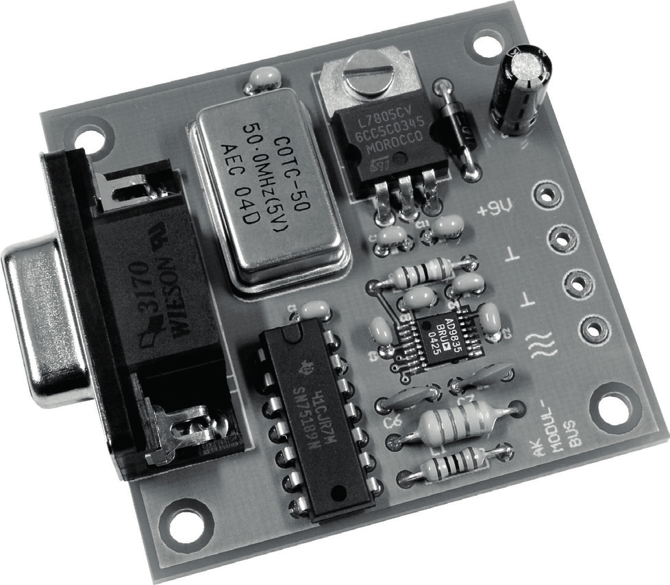
Radio Builder's Book
Figure 5.27: Programmable Oscillator with serial interface.
The DDS chip is only available in the TSPOP outline with a pin spacing of 0.65 mm. This tiny outline is necessary to achieve sufficiently short signal line lengths and good decoupling of the power supply. SMD assembly is not very easy and requires a certain level of skill. To
smooth over any possible hassle, a ready-assembled DDS PCB is available from the com-
pany AK Modul-Bus.
Figure 5.28: The fully populated DDS oscillator PCB.
● 96
Radio Builders Book - UK.indd 96
29-06-2023 16:09

Chapter 5 • RF Oscillators
Figure 5.29 shows a Visual Basic program from the manufacturer’s website for controlling
the DDS oscillator. It can be easily adapted and expanded for your own application re-
quirements. The user interface allows you to defi ne the output frequency between 0 and
24 MHz with a step size of 1 kHz and additional fi ne tuning in 100 Hz and 10 Hz steps. If
required, an off set of 455 kHz can be chosen so that the frequency display shows the re-
ceiving frequency in a superhet with a 455 kHz IF. In addition, there are frequency sweep
functions which are particularly useful for making RF measurements and displaying fi lter
characteristics.
Figure 5.29: Control software and COM1 to COM4 port selection.
5.10 The SI5351 PLL
The SI5351 uses a 25 MHz crystal oscillator and contains two PLLs that can operate at a
frequency between 600 and 900 MHz. The PLL dividers are used to multiply the input fre-
quencies to a high frequency intermediate clock while the second stage of synthesis uses
high resolution MultiSynth fractional dividers to generate the desired output frequency.
This provides two options for generating the desired frequency: The PLL can be set to a
fi xed frequency, for example, 900 MHz, and then divided down using fractional numbers.
Alternatively, the PLL can be adjusted in small steps and then divided down using integer
values to generate the fi nal frequency.
Figure 5.30: Block diagram of the SI5351.
● 97
Radio Builders Book - UK.indd 97
29-06-2023 16:09

Radio Builder's Book
The original software-defined radio for shortwave up to 30 MHz (see Section 8.6) was an
interesting project, but there were issues sourcing an alternative for the discontinued PLL
chip. Then the SI5351 clock chip from Silicon Labs came along. The Adafruit breakout board
was used for the initial experiments. There is also a useful Arduino library to support it.
Figure 5.31: The Adafruit SI5351 board.
With all this help and an Arduino Uno, it was possible to build on the Elektor SDR project
and expand its capabilities. The SI5351 is now a key component in the Elektor SDR Shield
(Section 8.7). Thanks to its excellent characteristics, numerous possibilities are now available, including digital data transmission, for example, with a WSPR transmitter or for HF
measurement applications.
Figure 5.32: The SI5351 (IC1) mounted on the Elektor SDR shield.
It’s not necessary to always use an Arduino board to control the SI5351 it can of course
be interfaced to much smaller microcontroller. In fact, Andrew Woodfield, ZL2PD, has pro-
duced a program written in Bascom for the ATtiny85. Using his code, it is possible to use
two of the PLL outputs of the SI5351 simultaneously by driving both internal PLLs. Any
slight change in the frequency is tracked by the PLL while the divide-ratio settings of the
following dividers remain unchanged. This method promises to keep phase noise to a min-
imum. The source code for this project can be found on the author’s website.
● 98
Radio Builders Book - UK.indd 98
29-06-2023 16:09
Chapter 5 • RF Oscillators
Figure 5.33: Controlled by a ATiny85.
● 99
Radio Builders Book - UK.indd 99
29-06-2023 16:09
Radio Builder's Book
Chapter 6 • Direct Mixers
Direct mixers consist of an oscillator and a mixer and convert an RF input signal to a base-
band (usually audio) signal in one step. They are suitable for receiving SSB and CW broad-
casts as well as digital broadcasts such as DRM. Compared to a regenerative receiver the
mixer achieves better frequency stability. An oscillator with low phase noise is important for error-free reception of DRM broadcasts.
6.1 Mixer Types
Mixer circuits convert input frequencies to other frequency ranges. In a superheterodyne
receiver, the mixer converts the received signal to an intermediate frequency (IF) (see Figure 6.1). In contrast, a direct-conversion mixer or zero-IF mixer converts the signal directly to the audio frequency (AF) range. Such receivers are used, for example, in simple amateur
radio applications. For DRM reception, the signal is converted to the 12 kHz range, and it is only a question of definition whether to call the output signal an AF or an IF.
Figure 6.1: Block diagram of a medium wave superhet radio.
A direct mixer directly converts the received signal to the audio frequency range, without
the use of an intermediate frequency. It consists of an oscillator and a mixer and is com-
monly used in simple amateur radio applications. Due to the finite Q factor of the resonant
circuit, image frequency suppression is only possible at low frequencies (long wave).
In this text, mixer types are described in connection to their use in a superheterodyne type of receiver with an IF amplifier. However, the same circuit can also be used as a direct mixer by tapping off the baseband signal instead of the intermediate frequency.
One particularly simple and commonly used mixer is the multiplying mixer stage which
uses a single transistor. When two sinusoidal signals are applied to a multiplier, the output signal contains the sum and difference frequencies of the two input signals, in addition to
the two original signals. In this case, multiplication means that the gain of one signal is
directly controlled by the instantaneous value of the second signal. A variable gain amplifier is therefore necessary, the gain of which can be adjusted directly by an oscillator signal.
A single transistor can be used to mix multiple frequencies when biased at the appropriate
operating point and both signals are applied to the base. This method of signal processing is also known as an additive mixer. Considering the gain of the transistor as the product of its
● 100
Radio Builders Book - UK.indd 100
29-06-2023 16:09
Chapter 6 • Direct Mixers
transconductance and external resistance and noting that the transconductance is propor-
tional to the collector current, a change in the collector current due to the oscillator signal is sufficient to multiply the input signal with the oscillator signal. The input signal should be small enough so that it only operates over a narrow region of the transconductance slope,
i.e., being kept below 1 mV. The oscillator signal, on the other hand, should modulate the
collector current as linearly as possible and without overloading it.
Figure 6.2: A slope multiplier used as a mixer.
Figure 6.2 shows a simple mixer using an NPN transistor in a Superheterodyne application.
The low impedance oscillator signal is coupled to the emitter and directly modulates the
collector current. The current feedback using emitter coupling ensures good linearity. The
input signal is fed directly to the transistor base. This signal must be relatively small to ensure the transistor is not driven beyond its narrow effective operating region. The collector current therefore contains the mixed down converted signal, from which the intermediate
frequency can be filtered out to recover the desired baseband signal. The mixer operating
point should be stabilized to ensure consistent results.
In principle, both signals could also be applied to the transistor base. Figure 6.3 shows a
simplified version of the mixer, with the operating point stabilization omitted for clarity of principle. It’s important that the oscillator signal is large enough to modulate the collector current and the input signal is small enough not to create distortion. In simple receivers,
self-oscillating mixer stages are often used, where the oscillator transistor also serves as the mixer. A regenerative transistor stage can also be regarded as a mixer of this type.
● 101
Radio Builders Book - UK.indd 101
29-06-2023 16:09
Radio Builder's Book
Figure 6.3: A simplified mixer.
The simple mixer circuit shown in Figure 6.3 is practically no different from the basic circuit for a single transistor emitter amplifier. This means that practically any amplifier can also become a mixer if you supply it with two signals of different frequencies and appropriate
signal amplitudes. This also poses a danger because most of the time, the frequency mix
needs to undergo further processing. The input amplifier in a shortwave receiver often has
to deal with very strong signals alongside very weak signals. It can happen that one of the
stronger signals acts like an oscillator signal and generates mixing products. This phenom-
enon is called intermodulation or cross-modulation. This generates numerous interference
signals that disturb the reception of weak signals.
The same applies to the transistor in a mixing stage such as in Figure 6.2. In addition to
the oscillator signal, other high levels input signals can also lead to mixing products. The interference immunity of such a mixing stage is therefore not particularly high. They are
still used in simple radio receivers where high sensitivity or immunity to high input signals are not important properties. For better performance more sophisticated mixers must be
used. A shortwave receiver, as used in amateur radio applications, should be able to cope
with signals in the sub 1 µV range as well as much stronger signals of up to 100 mV with-
out distortion. This wide dynamic range is only possible if the mixer characteristics are
extremely linear for the entire input signal range.
Dual-gate field-effect transistors (DG-MOSFETs) such as the BF961 can be used to build
a mixer with a good dynamic range. Used as amplifiers, they have a linear characteristic
curve and therefore produce low distortion. The steepness of the transistor characteristic
can be modulated via the second gate. Using appropriate adjustment of the gate voltages
and a suitable oscillator level, good dynamic range is achievable. Dual-gate MOSFETs are
commonly used in shortwave and FM receivers mainly because they lead to reduced circuit
complexity.
● 102
Radio Builders Book - UK.indd 102
29-06-2023 16:09

Chapter 6 • Direct Mixers
Figure 6.4: Mixer stage using a dual gate MOSFET.
A single diode can also be used as a mixer. In the circuit shown in Figure 6.5, both signals are first added together. The envelope of the resulting mixed signal contains the desired
mixing products. A rectifier is all you need to extract them.
Figure 6.5: A diode mixer.
An additive mixer has good ability to handle large signals. One disadvantage is that more
than two frequency products are created in the mixing process. The oscillator signal is now
no longer a sinusoid but appears as a square wave because of the diode switching charac-
teristics. The signal now includes odd harmonics of the oscillator signal i.e., 3 fOSC, 5 f OSC, etc. Each of these harmonics also generates corresponding mixed products. For a demodulator, this is not significant, as signals with multiples of the carrier frequency are far enough away from the wanted baseband signal so that they can be removed with a low-pass filter
that will be required anyway. At the receiver front-end they can be suppressed by filters.
In principle, a transistor or field-effect transistor such as the BF245 can also be used as
the active element in a mixer. A JFET has the advantage of very fast switching times and
lower levels of distortion. In the circuit shown in Figure 6.6, a negative bias voltage for the field-effect transistor is automatically established. The FET acts like a switch that repeated-ly shorts the input signal. This type of large-signal mixer is used, for example, as a second mixer in the DRM receiver covered in Section 7.4.
● 103
Radio Builders Book - UK.indd 103
29-06-2023 16:09

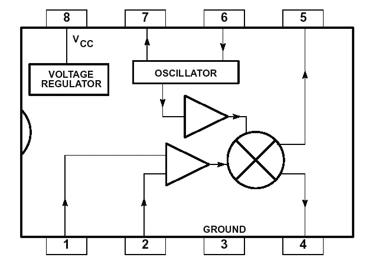
Radio Builder's Book
Figure 6.6: A JFET mixer.
A special form of diode mixer is the fully symmetrical ring mixer using four diodes. The
diodes work as switches that are controlled in sync with the oscillator frequency. Schottky
diodes are usually used because they have particularly fast switching times and generate
low distortion. At the output of the ring mixer, neither the oscillator signal nor the input signal appears if the broadband transformers and the diodes are well balanced. A ring mixer
is used in the input of the DRM receiver covered in Section 7.4 and in the direct mixer in
Section 6.4.
Figure 6.7: A wideband diode mixer.
Integrated mixers often work as fully symmetric multipliers. One simple mixer with a built-
in oscillator is the NE612. This IC requires only minimal external circuitry and works at
frequencies up to 300 MHz. It is suitable for battery operation and works with a supply
voltage between 4.5 and 8.5 V.
Figure 6.8: The NE612 with internal oscillator.
● 104
Radio Builders Book - UK.indd 104
29-06-2023 16:09

Chapter 6 • Direct Mixers
Figure 6.9: Block diagram of the NE612.
The internal circuitry of the NE612 provides all the necessary bias voltages, so input signals can be AC coupled with capacitors. Collector resistors are also built in. The mixer has an
input and output impedance of 1.5 kΩ and is suitable for balanced or unbalanced operation
(see Figure 6.10). The internal oscillator can be configured for an external crystal, a tuned tank network or as a buffer to an external local oscillator.
Figure 6.10: The NE612 used as a symmetrical and unsymmetrical mixer.
6.2 Direct Mixer using a BF245
A low-cost, home-brew direct mixer design often relies on a freely tunable oscillator to
avoid the cost of a custom crystal or professional VFO. Ideally a direct mixer should have
the largest possible dynamic range to allow for the use of a better antenna in weak recep-
tion conditions. Experience with simple regenerative receivers has shown that the use of
a long antenna can lead to receiver front end overload and generation of intermodulation
products. A passive mixer without any mixing amplification inserted directly behind the
receiver front end can provide a solution if it has good interference rejection.
A JFET mixer is particularly simple and exhibits good large signal stability. If the FET is operated without a DC voltage, it essentially operates as a controlled resistor. An ideal passive resistor has a linear characteristic that does not generate any signal distortion. The FET
● 105
Radio Builders Book - UK.indd 105
29-06-2023 16:09
Radio Builder's Book
comes relatively close to this ideal. Therefore, even with less than optimal control, an FET
is a very good switch that can handle relatively large signals without producing intermodu-
lation products in a mixer configuration.
Figure 6.11: The FET Direct Mixer.
The circuit shown in Figure 6.11 was designed for use across the entire shortwave range
from 5.8 MHz upwards. The oscillator and input circuit use separate tuning capacitors, so
the circuits do not have to be adjusted for optimal synchronization. If necessary, the tuning range can be narrowed down to a specific band to allow for finer tuning. The oscillator coil has taps at around 20% and 50% of the total number of winding turns. A relatively loose
coupling with the transistor results in good frequency stability.
An oscillator signal of approximately 1 to 2 Vpp is sufficient at the gate of the BF245. The additional gate resistor prevents excessive damping of the oscillator network when the JFET
input diode enters a conductive state. The FET acts as a switch that provides a short to
ground in sync with the oscillator signal for the received signal from the coupled coil. This produces the audio signal at the output filter. The coupling coil has approximately 20% of
the number of turns at the antenna resonant coil. By changing this transformer ratio, an
optimal match can be found, with a small coupling factor resulting in a narrow input circuit bandwidth and improved noise immunity.
The FET mixer offers good large-signal immunity but intermodulation products could be
generated further down the line in the audio stage. A low-pass filter is therefore inserted to reduce the signal bandwidth. Signals above 20 kHz are now sufficiently attenuated, so they
will not generate intermodulation products. The circuit was mainly used for DRM reception
in the 49 and 41-m bands. It showed no evidence of intermodulation effects even at high
field strengths using a long antenna. This allows for the use of an outdoor antenna which
suffers less from the effects of general domestic electrical interference.
The passive FET mixer does not provide any amplification on its own. The resulting audio
signals are therefore way down in the microvolt range. A single audio stage boosts the
signal level high enough for the microphone input of a PC sound card. Its overall sensitivity
● 106
Radio Builders Book - UK.indd 106
29-06-2023 16:09
Chapter 6 • Direct Mixers
depends mainly on the antenna properties. The circuit has very effective selectivity, allow-
ing the reception of weak amateur radio signals in the 40-m band even in the immediate
vicinity of high power broadcast signals.
6.3 Diode Ring Mixer
In this test setup, a DDS signal generator is used to provide the local oscillator signal to a 4-diode ring mixer. The direct mixer uses a Mini Circuits TDM2 diode ring mixer and the
TUF-1 can also be used in its place. The DDS oscillator output signal level at 0 dBm was
raised by about 7 dBm using a BF494 transistor as a broadband amplifier. The baseband
signal recovered by the mixer is amplified by the low-noise B548C AF stage at the mixer
output. This provides sufficient signal level to directly drive the microphone input of a PC
sound card even with a poor RF. The mixer is terminated with about 50 Ω, resulting in good
large-signal stability. For best reception a long length of wire setup high outdoors can be
used for the antenna. If that is impractical a one to three meters length of wire stretched
out around the room can also do the job. There are no tuned resonant circuits or RF pre-
amplifiers used in this design so construction is not particularly critical.
Figure 6.12: Direct mixer using 50 Ω termination.
A ready-made Schottky diode ring mixer is not cheap but you can easily build one your-
self. The mixer consists of four identical Schottky diodes type BAR28 and two broadband
transformers. The RF transformers are wound on Amidon FT37-77 ferrite toroidal cores.
The primary winding consists of a trifilar winding of 10 turns of 0.2 mm CuL wires wound
through the toroid. To make this, three lengths wires are laid alongside each other and
wound through the core ten times.
● 107
Radio Builders Book - UK.indd 107
29-06-2023 16:09
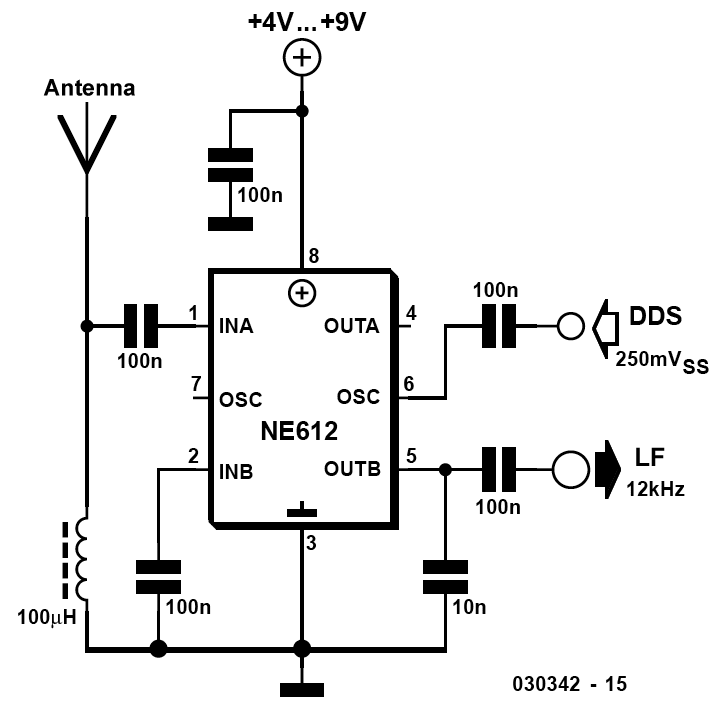
Radio Builder's Book
Figure 6.13: Windings on the ferrite toroidal cores.
Then ends of the coils can now be scraped clean and tinned with solder. A continuity tester
can be used to identify the ends of the three coils. Two of the windings are connected in
series to form the two-phase winding for connection to the diodes. The third winding forms
the oscillator or signal input. The four diodes can now be soldered on correctly and the
mixer will be ready to go. Results from testing the homemade mixer in the circuit shown in
Figure 6.12 indicates that its performance is not too far away from commercially produced
ones.
6.4 Direct Mixer using an NE612
A widely used and inexpensive integrated mixer is the NE612. This IC contains an internal
oscillator and a fully symmetrical mixer. If an external oscillator is used, the IC must be
driven at Pin 6 with a signal level from 200 mVpp to a maximum of 300 mVpp.
Figure 6.14: External control from a DDS-Generator.
● 108
Radio Builders Book - UK.indd 108
29-06-2023 16:09
Chapter 6 • Direct Mixers
This receiver design operates without any input selector and uses a long wire antenna. At
the input, there is only a small, fixed value inductor. Using a long wire antenna, DRM signals can be received with an SNR of up to 20 dB. The mixer used in this receiver, however, is not quite as good as a diode mixer, possibly due to its poorer performance with large signals.
Overloading the mixer input will generate intermodulation products, which then interfere
with the DRM signal. One advantage of the NE612 mixer is its mixer gain, which gives it
greater sensitivity. The NE612 circuit has better performance than a diode mixer when us-
ing short whip antennas and with low RF signal levels.
Figure 6.15 shows a freely-tunable receiver for the 40-meter band. The internal oscillator
of the NE612 exhibits good stability and low phase noise, even when operating without a
tuned circuit. The tuned input circuit provides enough preselection to avoid overload from
strong signals in other bands.
Figure 6.15: An integrated direct mixer.
Using a coil of approximately 20 turns wound on an 8 mm diameter coil former, both 6 MHz
and 7 MHz can be received by adjusting the screw-in ferrite slug. A small FM tuning ca-
pacitor with triple reduction drive provides sensitive tuning control. The input circuit is not critical and can also be tuned by soldering a fixed capacitor, such as a 120 pF capacitor
across the adjustable coil.
● 109
Radio Builders Book - UK.indd 109
29-06-2023 16:09

Radio Builder's Book
Figure 6.16: Installed in the enclosure of the VHF tuning capacitor.
The shielded enclosure from an old FM tuner with a 3-gang tuning capacitor was used for
the test setup. With the shielding lid closed, it provides impressive isolation from external influences. Using Styroflex capacitors in the oscillator resonant circuit provides good frequency stability and easy tuning. Once tuned, the receiver remains on station for many
hours.
An easier alternative to manual tuning is to use a direct mixer with a quartz crystal. This
will of course limit the number stations you can receive to just one but stability is no longer a problem. The circuit in Figure 6.17 uses a standard 6 MHz quartz crystal that can be
pulled to 6002 kHz using the 20 pF trimmer capacitor. This allows reception of DRM-RTL 2
on 5990 kHz with an inverted spectrum. The circuit was featured in the German magazine
Funkamateur in April 2004 as a PCB project using a special 6107 kHz quartz crystal to receive transmissions on 6095 kHz. Since then, the station has shut down. You can still,
however, receive AM stations using the appropriate SDR software or switch to the 40-meter
amateur radio band by using a different value quartz crystal.
Figure 6.17: A fixed-frequency receiver for 5990 kHz.
● 110
Radio Builders Book - UK.indd 110
29-06-2023 16:09
Chapter 7 • The AM-Superheterodyne Receiver
Chapter 7 • The AM-Superheterodyne Receiver
Regenerative and direct conversion receivers are now really only of interest as hobby pro-
jects, almost all radios you can buy today work according to the superheterodyne principle.
A superheterodyne achieves better selectivity and also allows for the use of automatic gain
control (AGC). Here you will take a closer look at the technology and build some simple
superhet receiver designs.
7.1 An AM Shortwave Receiver using the TCA440
The TCA440 integrated circuit simplifies the construction of an AM superhet receiver, as all stages are combined in one IC. Figure 7.1 shows the typical structure of a freely tunable
receiver using a ceramic filter in the IF stage. The IC contains a regulated front-end and a regulated IF amplifier. The control voltage is obtained via a separate diode at the output
of the IF amplifier. The received signal strength can also be displayed on an S-meter. A
suitable audio amplifier stage is still required at the audio output.
Figure 7.1: Shortwave Superhet using the TCA440.
Building and tuning the oscillator and input circuits is the most challenging task when building a superhet. Both circuits must be finely tuned around the intermediate frequency with
good coherence.
Figure 7.2 shows a variant of the receiver using varicap diodes for tuning. A potentiometer
or an external PLL such as the SAA1057 can be used to provide the tuning control voltage.
An additional second mixer allows the receiver to be used as a DRM receiver.
● 111
Radio Builders Book - UK.indd 111
29-06-2023 16:09
Radio Builder's Book
Figure 7.2: A receiver with PLL tuning
The RF coils used come from IF filters for 10.7 MHz and each has an additional 10-turn
coupler winding. The frequency range and coupling coefficient were determined experi-
mentally. Both circuits are tuned using a BB204 dual varicap diode. The oscillator circuit is adjusted via the coil’s screw-in slug which allows the PLL to lock in to the desired frequency range. The input circuit is then adjusted for maximum output signal amplitude. The circuit
has a high Q and provides adequate image frequency rejection. Good synchronization of both circuits is achieved without difficulty in the range of 5.8 to 7.5 MHz if the input circuit is tuned precisely in the middle range.
The IF filters use ready-made coil filters for 455 kHz and the ceramic filter CFW455F. The
second oscillator is controlled by a CSB470 low cost ceramic resonator. Using the compo-
nent values shown, the frequency is pulled by 3 kHz to 467 kHz. The oscillator is sufficiently stable and precise to within 1 kHz without the need for any special adjustment.
The demodulator uses a simple additive mixer using a germanium diode, which works well
here because the IF voltage at the output of the TCA440 is already at around 1 V. For dis-
tortion-free demodulation, it is important that the oscillator amplitude is greater than the signal amplitude at the coupling coil. An advantage of this simple demodulator is that it also works seamlessly for AM when the supply voltage to the second oscillator is switched off.
The TCA440 has significant overall gain, requiring the use of automatic gain control (AGC).
The control voltage is obtained using a second germanium diode, which coupled to the
output circuit via a 22 kΩ resistor, so that it does not load the signal and give rise to any distortion. This also results in a softer AGC characteristic so that a single interfering noise spike will not immediately reduce the gain. This slow reaction is more favorable for DRM
reception than a fast AGC response.
● 112
Radio Builders Book - UK.indd 112
29-06-2023 16:09
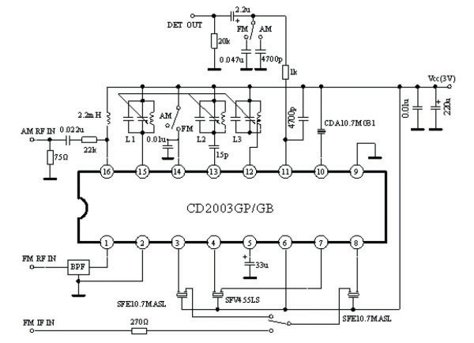
Chapter 7 • The AM-Superheterodyne Receiver
7.2 AM/FM Radio using the CD2003GP
While searching for highly integrated radio ICs for AM and FM bands I found the CD2003GP
chip. This IC can often be found inside domestic radios such as bedside clock radio receiv-
ers. It is also available from Modul-Bus.
Figure 7.3: Block diagram of the CD2003.
A test circuit diagram shows the basic application. Interestingly, the design completely
dispenses with coil filters in the IF stage, making adjustment very easy. Selection depends
solely on the ceramic filters.
Figure 7.4: External components to build an FM/AM radio using the CD2003.
The very simple external circuitry uses coils without the need for any tap points. This makes the IC an ideal component for personal experimentation. Figure 7.5 shows the construction
of a complete AM/FM receiver. The input circuit for medium wave uses a ferrite rod anten-
na, and the oscillator circuit uses a fixed 100 µH inductor. For FM, free standing air-cored coils are used, which can be tuned by slightly stretching or squashing the turns together.
The concept allows for improvements to the IF filters. In this case, two AM filters are used with an intermediate circuit and a fixed inductor.
● 113
Radio Builders Book - UK.indd 113
29-06-2023 16:09
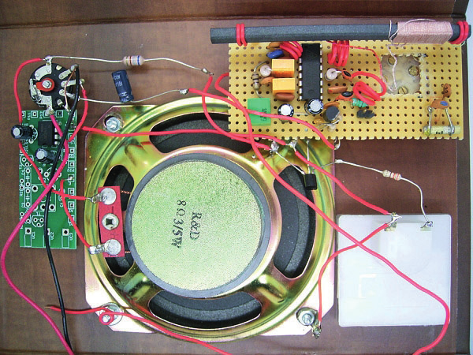
Radio Builder's Book
Figure 7.5: A complete AM/FM Radio.
With the circuit constructed, everything can be fitted into the case of a retro radio. An
LM386 amplifier drives a large speaker, resulting in very good sound quality. The ALC infor-
mation was taken from pin 5 of the radio IC via an emitter follower stage to display on the
S meter. This helps find the optimal tuning point.
Figure 7.6: Installed in a case.
7.4 DRM Receiver
In the 3/2004 issue of Elektor Magazine, a DRM superhet receiver (using a 455 kHz IF) was described and proved to be a good introduction for many readers interested in digital radio
systems. Unlike an IQ or zero-IF receiver this design uses a steep IF filter. The 12 kHz out-
● 114
Radio Builders Book - UK.indd 114
29-06-2023 16:09
Chapter 7 • The AM-Superheterodyne Receiver
put signal from the receiver is fed to a PC via a mono audio input channel. An older laptop
with just a microphone input may be suitable machine to run the necessary software.
The main goal of the development of this DRM receiver was to build a radio with good
reception performance that does not require any adjustments. No special coils or tuning
capacitors are needed in this design, only readily available fixed inductors. This is a bonus for those who feel more at home with the black and white world of digital electronics rather than the dark arts of RF technology. Altogether the design works with no tweaking, no
special measuring equipment, just a very simple software adjustment to compensate for
tolerances in the oscillator frequencies.
Figure 7.7: The finished receiver.
Basically, the receiver can be seen as a DRM interface for the PC. As shown in Figure 7.8,
the DRM receiver has two connections to the computer: the first is via the RS232 interface,
where the receiver inputs digital control information for tuning the receiver to the frequency of the desired DRM transmitter.
● 115
Radio Builders Book - UK.indd 115
29-06-2023 16:09
Radio Builder's Book
Figure 7.8: Functional diagram of the DRM receiver and PC.
The second interface supplies the received signal information to the PC. Unlike a regular
radio, the output of the DRM receiver is not an audio signal that can be heard through
speakers or headphones. Instead, the DRM receiver mixes the signal of the DRM transmit-
ter down to an intermediate frequency of 12 kHz. The receiver output supplies a mixture
of modulated carrier frequencies that together transmit the audio signal as a digital data
stream. This DRM spectrum, a frequency mixture with a bandwidth of 10 kHz, is connected
to the line input of the PC’s sound card. The sound card digitizes the signal, and a DRM
receiving program, containing a DRM software demodulator/decoder as its core compo-
nent, is responsible for both demodulating the DRM signal and decoding the received data
stream. The audio signal is then available at the output of the sound card in stereo Hi-Fi
quality for playback through the PC’s speakers.
The block diagram can be easily found in the circuit diagram after Figure 7.9. The DDS
oscillator with IC2 (see Section 5.9) supplies its signal via T1 to the first mixer (MIX1), a diode-ring mixer. The intermediate frequency of 455 kHz passes through a steep-slope ceramic filter (Fl1) with a bandwidth of 12 kHz. A IF amplifier stage with a BF494 (T2) boosts the level by about 20 dB before the signal is fed to the second mixer, a passive FET mixer
with a BF245 (T4). The second oscillator is stabilized by a ceramic resonator CSB470, which
is 'pulled’ by 3 kHz to 467 kHz. The resulting 12 kHz IF signal passes through a simple
bandpass filter and is again amplified and buffered by two opamps (IC3), before it is ready
at the output for connection to the PC sound card.
The most important characteristic for good DRM reception is phase purity of the mixer
oscillator. The DRM receiver meets the highest demands here: the DDS VFO generates an
extremely phase-pure oscillator signal. Another important characteristic is the receiver’s
large-signal rejection performance. The mixers used in this design offer excellent perfor-
mance in this regard so that with a simple wire antenna connected to the receiver input the
DRM software achieves 30 dB quieting.
● 116
Radio Builders Book - UK.indd 116
29-06-2023 16:09
Chapter 7 • The AM-Superheterodyne Receiver
Figure 7.9: The circuit diagram.
Some properties of a receiver’s design are important for AM reception but are not so critical for DRM reception so these excellent results have been achieved here despite the receiver’s
simplified design and alignment-free setup.
The dynamic range of the PC sound card, together with the DRM software, is large enough
to cope with variations of the input signal of up to 30 dB. This eliminates the need for an
automatic gain control (AGC). High sensitivity is also not an issue for DRM. Even very weak
● 117
Radio Builders Book - UK.indd 117
29-06-2023 16:09
DRM signals of about 10 µV cannot be improved by increasing the overall gain, because the
actual signal to noise ratio is not sufficient with the large bandwidth of 10 kHz. More gain would only raise the noise floor. It has also been shown that the receiver does not require
a tuned preselector. On the one hand, the image frequency at a distance of 910 kHz (2 ×
455 kHz) is almost always outside neighboring broadcast bands, and on the other hand,
interfering signals are surprisingly well tolerated by the DRM decoder.
The antenna input with an impedance of approximately 50 Ω is directly connected to the di-
ode ring mixer TUF-1, which is designed for a frequency range of 2 to 600 MHz. In practice,
however, the receiver can also work in the medium-wave range down to 500 kHz without
any problems. If an active antenna or a low-impedance preamplifier is used, successful
operation can also be achieved in the long-wave range. At the output of the ring mixer, a
broadband matching network is used for 455 kHz. The impedance is raised by a resonant
circuit with capacitive tapping to approximately 1.5 kΩ to match the input resistance of the ceramic filter CFW455F. The circuit is operated with a low Q-factor (<10), which results in a bandwidth of approximately 50 kHz and avoids component tolerance issues. The matching
circuit also contributes to the remote signal rejection of the IF filter.
The filter CFW455F has a bandwidth of 12 kHz, of which 10 kHz are required for DRM. The
additional bandwidth is not detrimental in fact, having a slightly wider bandwidth is important to handle certain frequency deviations of the second oscillator. If the second oscillator is not exactly at 467 kHz but, for example, at 467.5 kHz, the first IF shifts to 455.5 kHz. The software then has to tune the first oscillator 500 Hz higher. In the end, however, a signal
of 12 kHz appears as required. The slightly shifted first IF still passes through the IF filter.
This made it possible to avoid an expensive special crystal in the second oscillator. Instead, the second oscillator at 467 kHz uses an inexpensive ceramic resonator type CSB470. The
frequency is pulled down by 3 kHz due to the large capacitance of the oscillator and reaches a maximum deviation of about 1 kHz.
After the IF filter, there is a single unregulated amplifier stage that raises the signal level by about 20 dB. Since there is no pre-amplification or mixing amplification and the IF filter causes additional signal attenuation, the signal levels are sufficiently small to safely avoid overloading.
A passive FET mixer converts the signal to 12 kHz. The JFET BF245 works like an RF switch
shorting the signal in sync with the oscillator. This simple mixer has a large dynamic range and processes signals up to over 100 mV without noticeable distortion. The subsequent
audio amplifier with the dual op-amp LM358 raises the level by about 20 dB again and
contains a simple bandpass filter
● 118
Radio Builders Book - UK.indd 118
29-06-2023 16:09
Chapter 7 • The AM-Superheterodyne Receiver
Figure 7.10: The component mounting plan.
The receiver PCB is populated with conventional through-hole components on the top side,
while the DDS is in its SMD outline is mounted on the underside. Some SMD capacitors are
also mounted on the underside to reduce lead length and inductance.
There are only a few active DRM stations at this time, but the receiver can still be used with appropriate software for shortwave broadcast reception, digital stations of all kinds, and
amateur radio.
● 119
Radio Builders Book - UK.indd 119
29-06-2023 16:09
Radio Builder's Book
Chapter 8 • IQ Mixers and Software Defined Radio
An IQ mixer is a double mixer with a 90 degrees phase difference between the two oscil-
lator signals. This makes it possible to suppress unwanted image frequencies and reduce
the need for complex pre-selection measures for the received signal. This is an essential
principle of most SDR concepts.
8.1 SDRadio
Back in the day, it was only high-end world receivers that came with features like a flat
screen display, a wide range of selectable receive bands, and similar luxuries. More recently however, more and more of a receiver’s functions are off loaded into software, while the
hardware becomes ever more Spartan. This trend has resulted in a concept called 'Software
Defined Radio’ (SDR) and is especially relevant in amateur radio.
Figure 8.1: The SDRadio GUI.
One of the first and simplest programs for working with SDRadio was created by Italian
amateur radio operator Alberto, I2PHD. This PC program, together with a sound card and
a simple IQ mixer as an HF frontend, creates an excellent shortwave receiver working in all
modes from AM to SSB. Without having to retune the receiver, a range up to 48 kHz can
be tuned solely with the mouse. You can always see what is happening on the neighboring
frequencies and can flexibly respond to interference by adjusting the receiver bandwidth,
for example.
The required hardware is an IQ mixer, essentially a direct mixer in the form of a two-stage
mixer with phase-shifted oscillator signals. This effectively achieves the suppression of
image frequencies.
● 120
Radio Builders Book - UK.indd 120
29-06-2023 16:09
Chapter 8 • IQ Mixers and Software Defined Radio
8.2 Image Frequency Rejection
Every simple mixer generates, in addition to the desired frequency, a signal at the image
frequency, which often requires a lot of effort to filter out. The I/Q mixer, on the other
hand, consists of two mixing stages and provides its own image frequency suppression.
This principle can be used for very simple receivers and is particularly useful in the context of software-based receivers.
The most commonly used types of receivers are the direct conversion receiver, the su-
perheterodyne receiver, and the direct mixer receiver. With a direct conversion receiver,
a resonant circuit at the input provides the only method to select a particular station. An
example is the regenerative receiver where active regeneration provides the necessary
selectivity. A direct conversion receiver does not suffer from image frequency problems
but has relatively low attenuation of adjacent channels. The superheterodyne receiver, on
the other hand, uses several intermediate frequency circuits to achieve good selectivity.
However, now the image frequency comes into play. A superheterodyne with an interme-
diate frequency of 455 kHz has a secondary reception point at a distance of 2 × 455 kHz
= 910 kHz. On medium wave, a pre-selector is sufficient to suppress this unwanted signal.
Many shortwave receivers, however, actually show a significant image frequency.
The direct mixer is a particularly simple receiver that can, for example, produce good
results for anyone starting out in amateur radio. Without going through an intermediate
frequency, it mixes the received signal with a local oscillator running at a frequency very
close to the received signal to directly produce the baseband signal. The principle has also been successfully used for very simple DRM receivers, where the 'AF signal’ is actually a
12 kHz intermediate frequency. In both cases, the image frequency is so close to the target
frequency there is no chance of filtering it out. Figure 8.2 illustrates the problem with an example. A signal at 3990 kHz is to be downmixed to 12 kHz. The mixer oscillator operates
at 3990 kHz + 12 kHz = 4002 kHz. This creates the image frequency of 4002 kHz + 12 kHz
= 4014 kHz. Now you have to hope there is no strong signal on this 'wrong’ frequency.
Figure 8.2: Image frequency generation.
An I/Q mixer solves the problem of the unwanted spurious frequency by using the con-
cept of quadrature signals. Two identical mixers are used here, which use the same local
oscillator signal, but with a phase difference of 90 degrees. The RF received signal is now
mixed with the two LO signals to produce an I (in-phase) and Q (phase shifted) output. The
signals must now be phase-shifted again and then sent to an adder. Here, the image fre-
quencies will cancel each other out, while the desired signal will be amplified. The reverse
● 121
Radio Builders Book - UK.indd 121
29-06-2023 16:09

Radio Builder's Book
procedure is used to generate SSB signals (Figure 8.3). The same job is performed here:
mixing without an image frequency, which in this case corresponds to the other sideband.
The technique is known as the 'phasing method’ in amateur radio circles.
Figure 8.3: SSB signal generation using the phasing method.
The difficulty with the phasing method, however, is to uniformly rotate an entire frequency
band from 300 to 3000 Hz in phase. In the so-called 'third method’ using the 'Weaver mod-
ulation’ method, two additional mixers are used, which also receive phase-shifted oscillator signals to recover the audio signal.
Figure 8.4: Signal processing according to the 'Third Method’. ((Mixer3.gif))
Nowadays, the conditions for using an I/Q mixer have become even more favorable be-
cause signal processing via software has made tremendous progress. For simple experi-
ments, there are excellent programs like SDRadio or SDR# available. All you need to do is
provide two signals mixed with a 90-degree phase difference to the left and right channels
of the PC sound card. The software takes care of everything else.
8.3 The IQ Mixer
The simplest way to generate a phase shifted waveform from an oscillator signal is to use
some digital circuitry. Two D-type flip-flops such as the 74AC74 can be used to divide an
input frequency by four and simultaneously produce two output waveforms shifted by ex-
actly 90 degrees.
● 122
Radio Builders Book - UK.indd 122
29-06-2023 16:09
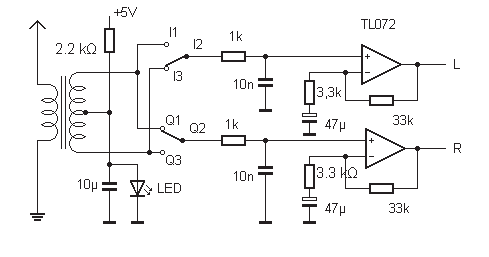
Chapter 8 • IQ Mixers and Software Defi ned Radio
Figure 8.5: The IQ-Mixer.
Originally, a programmable quartz oscillator based on the CY27EE16 was used as a clock
oscillator. This chip is no longer available and can be substituted with the SI5351. In principle, you could also use a tunable oscillator running at four times the reception frequency, but the necessary stability could only be achieved after careful design.
The mixers are constructed using four analog switches contained in the 74HC4066 IC,
which off er good synchronization and can handle high signal levels with good isolation be-
tween channels. Two analog switches are controlled by the clock generator, to produce a
balanced mixer. Figure 8.6 shows an I/Q direct mixer for the frequency range from 500 kHz
to about 30 MHz.
Figure 8.6: A wideband receiver.
● 123
Radio Builders Book - UK.indd 123
29-06-2023 16:09

Radio Builder's Book
A broadband transformer with 10:20+20 turns was wound on a small ferrite core. Simple
low-pass filters are used at the mixer outputs. The subsequent 20 dB amplifier gain im-
proves the receiver sensitivity. Figure 8.7 shows a prototype setup of the circuit.
Figure 8.7: Prototype layout of the complete receiver.
The I/Q mixer can achieve a spurious signal rejection of up to about 40 dB. Connecting only
one of the two channels to the sound card will produce the typical result for a simple direct mixer (Figure 8.8). A signal of 11 kHz appears both at +11 kHz and at -11 kHz. However,
with both inputs separated by a 90 degrees phase shift, the desired signal is amplified and
the image signal suppressed (Figure 8.9). A bandwidth of 48 kHz can therefore be tuned
by software alone.
Figure 8.8: Using one mixer generates an image frequency.
● 124
Radio Builders Book - UK.indd 124
29-06-2023 16:09
Chapter 8 • IQ Mixers and Software Defined Radio
Figure 8.9: Using two mixers showing image frequency suppression.
This simple receiver shows surprisingly good reception results on medium wave and short-
wave bands, especially high sensitivity, and good frequency stability, as well as excellent
selectivity, which is achieved solely through software.
A fundamental weakness of the simple circuit is that the mixer is driven at the odd harmon-
ics of the oscillator frequency. Some of the local oscillator switching signals can leak into the output signal path to generate intermodulation products, a low-pass filter or resonant
circuit can be useful to remove them.
8.4 Circuit Optimization
The IQ mixer consists of two identical mixing stages driven with a signal phase-shifted by
90 degrees. It is important for the two signals to have exactly the same gain and excellent
linearity. CMOS analog switches have proven to be effective mixers. Originally, a program-
mable quartz oscillator based on the CY27EE16 served as the oscillator, which has now
been replaced by the SI5351. This allows for an operating frequency of up to about 30 MHz.
The circuit uses analog switches of the 74HC4066 type and a digital divider using 2 flip flops using the 74AC74, which divides the oscillator frequency by four and creates the necessary
phase shift. To make it easy and get a head start the company Modul-Bus has developed a
board that provides the entire mixer/oscillator as a PCB module. Connections to the I and
Q mixer signals are available at the board edge.
● 125
Radio Builders Book - UK.indd 125
29-06-2023 16:09
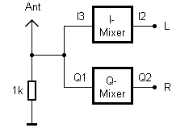
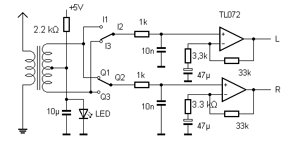
Radio Builder's Book
Figure 8.10: The IQ mixer PCB.
Here, the different circuit variants will be studied in more detail. For the first attempt, an extremely simple receiver is built with just one additional resistor. It will receive strong radio signals with a sufficiently long wire antenna.
Figure 8.11: The first mixer design.
This basic receiver can be improved by using a balanced mixer. Here a small transformer
with a center tap is used and achieves an image frequency rejection of about 40 dB.
Figure 8.12: Symmetrical Mixer.
In a balanced mixer the RF transformer can be a source of asymmetry. Here we will look at
how to build a symmetric mixer with four audio output channels. The signals will be com-
bined using two differential amplifiers. The idea is to design the circuit so that the mixer
● 126
Radio Builders Book - UK.indd 126
29-06-2023 16:09
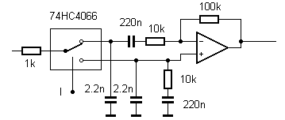
Chapter 8 • IQ Mixers and Software Defined Radio
outputs all have a loading of precisely 10 kΩ. The initial circuit is shown in figure 8.13.
The 2.2 nF capacitors at the outputs of the analogue switches provide a low-pass cutoff
frequency well above the band limit of 24 kHz, which ensures that passband tolerances do
not cause additional phase shifts. These simple low-pass filters are only used to isolate high level RF signals from the operational amplifiers. The actual filtering is left to the anti-alias-ing filter in the PC sound card.
Figure 8.13: Mixer without carrier.
The circuit achieves a good image rejection of more than 40 dB. The high overall gain of
about 40 dB is effective for picking up weak signals, but for extremely strong radio stations an antenna attenuator may be required. A weakness of the circuit is the low upper cut-off
frequency. Above about 12 MHz, sensitivity drops sharply. An experiment showed that the
two 1 kΩ resistors in front of the mixers are the source of the problem. If both are replaced by shorts, sensitivity is maintained above 25 MHz but this slightly reduces the image frequency rejection.
Although the circuit works relatively well, there is still room for improvement. The following detailed circuit diagram shows the differential amplifier used. It can be seen that this stage is actually not completely symmetrical. This means that the differential amplifier does not
have high common-mode signal rejection. This does not cause problems with image rejec-
tion but may result in intermodulation products from the RF stage below 24 kHz directly
entering the IF path via the mixer.
Figure 8.14: The differential amplifier configuration.
● 127
Radio Builders Book - UK.indd 127
29-06-2023 16:09
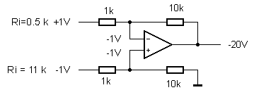
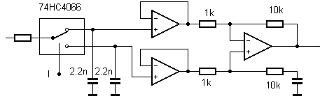
Radio Builder's Book
A conventional differential amplifier was tested and showed good common-mode rejection
but image rejection performance was poor.
Figure 8.15: A symmetrical differential amplifier.
The problem here is in the different input resistance of the two inputs, even though the
circuit appears to be symmetrical at first glance. The inverting input has an impedance of
about 0.5 kΩ, while the non-inverting input has an impedance of 11 kΩ. Using rounded
voltage values in the basic amplifier configuration (Figure 8.16) and driving the circuit with
+1 V and -1 V. The non-inverting input sets the voltage at both op-amp inputs because it is
a voltage divider to ground with no negative feedback. The upper 1 kΩ resistor is between
+1 V and -1 V, resulting in an input impedance of only 0.5 kΩ. This violates the most im-
portant rule of IQ circuit technology, which is that all four phases should be equally loaded.
Figure 8.16: Unsymmetrical input impedance.
There is a possible solution in the form of the so-called 'instrumentation amplifier’. For
this, two fully differential op-amps are used as impedance converters. The circuit appears
to have the same theoretically infinite impedance at the front end. This variant was also
tested. The result was again good image rejection. However, the receiver overall showed
more noise, lower sensitivity, and more distortion.
Figure 8.17: An instrumentation amplifier.
Theory and practice do not always go hand in hand. The reason here is that when the signal
gets up to a reasonably high frequency of 24 kHz standard operational amplifier begins to
run out of steam. An LM324, for example, has a gain-bandwidth product of 1 MHz so at
● 128
Radio Builders Book - UK.indd 128
29-06-2023 16:09

Chapter 8 • IQ Mixers and Software Defined Radio
20 kHz, the open-loop gain is only about 50. The difference between both inputs will no
longer be almost zero. A fully compensated operational amplifier has to struggle to follow
the input voltage. At higher frequencies, distortion occurs. Signals above 20 kHz can be
present at the mixer output, and their distortion products may partly lie in the passband.
These considerations led to the decision to reject the instrumentation amplifier for this
application.
The experiments have clearly shown that the symmetrical input resistance of the circuit is
more important than a high common-mode rejection ratio. If the RF input circuit operates
very linearly and a high-pass filter of 24 kHz is also used, there are actually no problems
with IF breakthrough. So, you returned to the original circuit using slightly different values.
The effective input resistance is now about 5 kΩ at both inputs. A series resistor of 100 Ω
offers a good compromise between high RF cutoff frequency and good decoupling between
I and Q mixers. In addition, the TL084 is now used, which is not quite as noise-free but has a gain bandwidth product of 4 MHz and can run from a simple 5 V supply voltage.
Figure 8.18: Now with matched input impedances.
The overall circuit is not optimized for highest sensitivity, but rather for high immunity to large signals and low distortion even with strong radio signals, including strong DRM stations. An SNR of well over 30 dB has been observed using this setup. The high sensitivity
typically found in amateur radio receiver specifications is not achieved here. Selective preamplifiers can however be used to address these requirements as well.
Figure 8.19: The optimized mixer design.
● 129
Radio Builders Book - UK.indd 129
29-06-2023 16:09
Radio Builder's Book
Figure 8.19 shows the latest version of the receiver. What’s still missing here for a practical design are some low-pass or band-pass filters for specific frequency bands. For example, if
you want to receive medium wave without a pre-filter, shortwave stations working at three
or five times the frequency will break through. Suppressing unwanted signals in the IQ
receiver is easy because there is no image frequency to worry about, only harmonic mixing
products. In principle, low-pass filters alone will do the job.
Figure 8.20: The populated IQ mixer PCB.
Now with the benefits of the latest optimized circuit the software-defined radio is more
sensitive with better image signal rejection. In the end, everything was fitted onto a single PCB.
● 130
Radio Builders Book - UK.indd 130
29-06-2023 16:09

Chapter 8 • IQ Mixers and Software Defined Radio
Figure 8.21: The RF front end.
At the RF front end an FET is configured as a source follower which provides a low imped-
ance signal to drive the mixers. There are three options for the antenna coupling: a wide-
band setting, a high-pass filter for shortwave or a low-pass filter for medium wave. The
low-pass filter has a cutoff frequency of around 1.6 MHz to help suppress harmonic mixing
products and interference from shortwave when receiving medium wave stations.
Figure 8.22: Two-stage IQ amplifier.
The IF amplifier uses two stages to give a total gain of 100. The input is optimized for equal input impedance of all four phases, which improves image rejection. The receiver achieves
an overall image rejection of 40 dB or more.
● 131
Radio Builders Book - UK.indd 131
29-06-2023 16:09

Radio Builder's Book
Figure 8.23: Connected to the mixer PCB.
The circuit board fits directly onto the IQ mixer. Together with the programmable quartz
oscillator, it forms a complete receiver with tuning via the serial interface. Power is now
supplied from the right-hand board via a voltage regulator. The screw terminals blocks on
the IQ mixer are unused but 5 V can be taken from here to power any additional circuits.
Figure 8.24: An alternative oscillator.
● 132
Radio Builders Book - UK.indd 132
29-06-2023 16:09
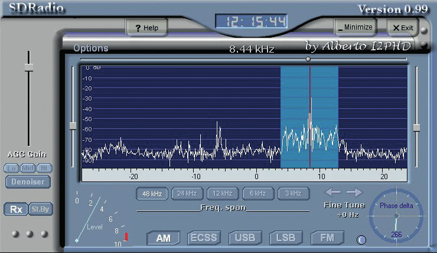
Chapter 8 • IQ Mixers and Software Defined Radio
The tried and tested receiver design was now also tested with a different VFO. The ICS307-
2 programmable oscillator is powered via the 2-way 5 V power terminal block on the mixer
board. Its output clock signal is connected using a small length of wire to the appropriate
socket position on the DIL socket.
Figure 8.25: Oscillator setup in software.
To tune the receiver to a specific frequency, you can use the ICS703-2.exe program, which
communicates with the receiver through the COM1 serial port. For example, to receive an
AM station at 6155 kHz, you would set the receiver oscillator to 6145 kHz. This allows you
to receive the station using SDRadio which gives excellent audio quality.
Figure 8.26: AM station reception in SDRadio.
8.6 Software Defined Radio with USB Interface
Back in 2007, Elektor Magazine developed and produced this receiver board based on the earlier explorations into the emerging field of digital radio. The aim of the project is to provide beginners with easy access to the topic of Software Defined Radio.
A Software Defined Radio (SDR) requires little hardware but sophisticated software. This
SDR project aimed to show what is achievable with minimal effort. The goal was to create
a universal receiver working from 150 kHz to 30 MHz, optimized for DRM and AM reception,
but also allowing reception of amateur radio bands.
● 133
Radio Builders Book - UK.indd 133
29-06-2023 16:09
Radio Builder's Book
The objective of this project was to create a receiver with medium sensitivity, but with the highest linearity and phase purity. The development focused on properties that are important for a top-notch DRM receiver. In fact, the receiver achieves an excellent signal to noise performance.
Figure 8.27: The Elektor Software Defined Radio with USB port.
Regarding sensitivity and overload resistance, the receiver can’t compete with top of the
range amateur radio equipment. Experiments have however shown that on the lower bands
up to 20 meters, the atmospheric noise is usually so strong that greater sensitivity is not
really an advantage. A comparison with an older Yaesu FT-7B rig showed about the same
results when receiving CW and SSB stations on the 80, 40, and 20-meter bands using the
same antenna. However, the SDR scored points with its advanced software capabilities.
Features such as continuously adjustable bandwidth and spectrum display are otherwise
only available in much more expensive receivers.
The receiver is controlled via USB from where it also sources its power. No additional power supply is needed. The FT232R was chosen as the USB interface. This modern USB-to-serial
converter does not require a quartz crystal because it has an internal high-precision RC
oscillator. The component is used here in its bit-bang mode, like a fast parallel port. Eight data lines are available and can be controlled as desired. Two of the signals are used as I²C
bus to control the receiver frequency. Three signals are used to switch the input multiplexer to select one of eight antenna inputs with and without filters. Two more inputs are used to
switch the receiver’s IF amplifier gain. This control interface ensures the receiver can be
fully managed via software.
● 134
Radio Builders Book - UK.indd 134
29-06-2023 16:09
Chapter 8 • IQ Mixers and Software Defined Radio
Figure 8.28: The receiver schematic in brilliant Elektor style. ((Schaltbild.tif))
Special attention was paid to decoupling the power supply. One of the reasons for this is
that the FT232RL USB chip uses internal clock signals which are at frequencies that will
also be received via the antenna. You don’t want any of this unwanted RF noise to leak
across from one stage to another. The FT232R contains exactly what the programmable
clock generator CY27EE16 needs with a voltage regulator of 3.3 V. Therefore, no addition-
al voltage regulator is needed. The remaining part of the circuit operates at 5 V, several
supplies are provided to power specific functions on the board with appropriate decoupling
● 135
Radio Builders Book - UK.indd 135
29-06-2023 16:09
to reduce crosstalk and noise. Keep in mind that the 5 V from the USB ultimately comes
from a PC power supply. The same power supply powers the entire PC, and load changes
can cause some noise on the supply line. This is particularly critical for the RF preamplifier of the receiver, which ultimately couples via the mixers to the IF branch. Therefore, a large capacitor provides stability at this point (VCC_HF).
The SDR requires an oscillator frequency that is four times higher than the signal received
so that it can be divided by four with the required phase shift. If you are aiming to receive signals up to 30 MHz, the oscillator needs to run up to 120 MHz. DDS oscillators are often
used in advanced RF projects but a DDS able to run at this speed will work out expensive,
power-hungry, and difficult to control. For this reason a programmable clock oscillator with an internal PLL is used here. Although the CY27EE16 was originally designed as a clock
oscillator for digital electronics and processors, it has proven itself in many RF applications.
Although the achievable frequency resolution is not as good as a DDS, the relatively modest
power consumption is important for this project, as you cannot draw too much power from
the standard USB port.
The chip is programmed via the I²C bus using the SCL and SDA lines. A VCO operates in-
ternally in the frequency range of 100 to 400 MHz. The VCO is stabilized using a 10 MHz
crystal and a PLL. Its output signal is passed via dividers to reach the desired outputs. The clock output Clock5 was chosen here. There is a VFO signal between 600 kHz and 120 MHz
that passes to the 74AC74 chain of dividers.
The exact phase shift of 90 degrees between the two oscillator signals is important. Devi-
ations lead to less effective suppression of image frequencies. Since the divider 74AC74 is
connected as a synchronous divider, you would not expect to find any phase error here. In
fact, the receiver shows a constant mirror suppression of about 40 dB up to about 15 MHz.
From about 20 MHz, this value decreases noticeably, but this is tolerable due to the lower
occupancy in this frequency range.
The receiver has several inputs that are switched via the input multiplexer 74HC4051. The
antenna input Ant1 is fed by way of filters to the first three inputs. The first switch position (wide) uses only an input choke, to short any low-frequency signals at the input to ground.
In the second position (medium wave), there is a low-pass filter with a cut-off frequency of 1.6 MHz, where the resistor R12 dampens a resonance peak. This filter prevents medium
wave reception from being disturbed by harmonic mixing with stations in the shortwave
range. The third position uses a simple RC high-pass filter, which is intended to attenuate
strong medium wave signals.
Another input (PC1) can be selected if you wish to connect external tuned input circuits or
preamplifiers. Three more inputs are provided for future expansion. The input filters on the board can be regarded as a kind of basic equipment that is sufficient in most cases. However, it would be possible to add further steep low-pass filters or special band-pass filters, which would safely attenuate harmonic mixing components in all situations.
● 136
Radio Builders Book - UK.indd 136
29-06-2023 16:09
Chapter 8 • IQ Mixers and Software Defined Radio
From the input multiplexer, the RF signal goes to a BF245C JFET which functions as an im-
pedance converter. The input is relatively high-impedance at 100 kohms, so, for example, a
high-Q resonant circuit can also be connected to the input In2. At the low-impedance out-
put of the source follower, a voltage of about 2.5 V is established, which is passed through the mixers and the following operational amplifiers to the output. Therefore, it is important that there are no low-frequency signal residues at the source. For example, the purity of
the supply voltage Vcc_HF is critical and therefore has a high level of filtering. The FET itself provides additional decoupling of the supply voltage. But nothing should come from its gate
that reaches the IF range below 24 kHz. For this reason an RF choke is placed directly at
the antenna input to shunt any 50 Hz (60 Hz) hum signals, for example.
The IF amplifier consists of two exactly equal branches, each of which provides a total gain of up to 40 dB. The TL084 was chosen here because it has a good gain-bandwidth product
of 10 MHz at a supply voltage of 5 V. This is important in order to supply a gain of 10 without phase errors to signals at around 20 kHz.
The final stage has a gain of 10 (20 dB), but this can be reduced to unity gain via the analog switches. A total of three attenuation steps are available: 0 dB, -10 dB, and -20 dB. So,
if excessively strong signals lead to overload, the gain can be reduced by software. The
attenuator is not located at the input of the receiver because there is already high over-
load resistance built in. On the other hand, at full gain, with a long antenna and high field strengths, the output can be over driven. The attenuation therefore applies to the output
driver stage and corresponds approximately to the gain control in an IF amplifier.
Figure 8.29: The receive spectrum obtained with G8JCFSDR.
8.7 Arduino SDR Shield
Elektor built its first Software Defined Radio with a USB interface back in 2007, using a conventional board and only a few SMD components. Since then, there have been thoughts
about updating the design and when the PLL chip used in the original was phased out it was
time to find a new solution. The original concept was recreated using the SI5351 Silicon
● 137
Radio Builders Book - UK.indd 137
29-06-2023 16:09
Radio Builder's Book
Labs PLL chip which is a CMOS clock generator with an I2C interface that generates signals
ranging from 8 kHz to 160 MHz.
Initial tests with this new chip using a breakout board from Adafruit (Section 5.10) were
successful. The existing software examples were written for the Arduino, so the first steps
were taken towards the Arduino environment. The new VFO was connected to the existing
SDR board, and it proved to be functional. Then came the question; why not build the en-
tire receiver as an Arduino shield? That way the power supply and USB interface would be
taken care of.
Figure 8.30: The SDR Shield with an Arduino Uno.
The current version of the receiver, which was last updated in 2019, is delivered as a fully assembled board with included header strips. You still need to solder the headers onto the
board so that the SDR board can be plugged onto the Arduino. Once that’s done you will
need to install some software, which can be found on the Elektor website and the author’s homepage. Finally to make it all work together you can use an audio cable to establish a
connection to your PC’s sound card, attach an antenna, and you’re good to go.
● 138
Radio Builders Book - UK.indd 138
29-06-2023 16:09
Chapter 8 • IQ Mixers and Software Defined Radio
Figure 8.31: The SDR shield and its header-socket strips.
The Arduino itself doesn’t really have much to do - it receives the desired frequency from
the PC and adjusts the VFO as required. This means that there is even a real chance to
build a standalone receiver, as the Arduino can handle the tuning all by itself. This opens
up unlimited possibilities, especially since the Arduino is widely used and many people can
program it.
● 139
Radio Builders Book - UK.indd 139
29-06-2023 16:09
Radio Builder's Book
Figure 8.32: The shield schematic.
Looking at the circuit diagram (Figure 8.34), you can see the individual components. The
SI5351 chip provides the oscillator signal which is tuned to four times the desired receive
station frequency. Two D-type flip flops type 74AC74 (IC2B) provide a divide-by-4 func-
tion to produce two clocks at the desired frequency with a 90 degree phase shift differ-
ence. These two clock signals are used to control the analog switches in the 74HC4066
(IC3) which functions as a mixer. It alternately connects the RF signal to the inverting and non-inverting inputs of the TS914 operational amplifier (IC4), downconverting the signal
to recover the baseband signal. After minor filtering and amplification, the signal goes to
the audio output. The RF input stage is a source follower with the BF545B JFET, the SMD
equivalent of the BF245B.
● 140
Radio Builders Book - UK.indd 140
29-06-2023 16:09
Chapter 8 • IQ Mixers and Software Defined Radio
The input is broadband and protected against overvoltage by two limiting diodes, which is
sufficient for shortwave reception with a wire antenna. The overvoltage protection is based
on the experience that input stages can be damaged during a thunderstorm. For critical
tasks, external filters and preamplifiers can still be used.
The latest version, V2_0, is technically identical but has additional connection points for
additional PLL outputs and DC-coupled signal outputs. This expansion facilitates experi-
mental use of the shield and simplifies external expansions for measuring instruments or
shortwave transceivers.
To use the receiver, you need a USB connection to the Arduino, an audio cable to the PC
sound card and a suitable antenna. Additionally, an Arduino sketch must be loaded to set
the VFO chip to the desired frequency.
Figure 8.33: The receiver with LC-Display mounted. ((Uno2.jpg))
The shield is designed to be used together with the Elektor LCD shield. It can be used to display the current frequency and is also useful for measuring purposes or standalone applications.
● 141
Radio Builders Book - UK.indd 141
29-06-2023 16:09
Radio Builder's Book
Figure 8.34: The received station displayed using SDR#.
● 142
Radio Builders Book - UK.indd 142
29-06-2023 16:09
Chapter 9 • Shortwave Antenna Design
Chapter 9 • Shortwave Antenna Design
When starting out building a simple crystal radio or an SDR receiver, it’s often enough to
use a simple stick antenna or even a test lead on the lab bench to act as the aerial. For
better reception try something like a 5 m length of wire hung around the room or even
just resting on the floor. However, with this type of layout, the antenna will also pick up
any background electrical noise from domestic appliances and interference from the mains
power network. For indoor use, antennas sensitive to the magnetic field have proven to be
more effective. With a good outdoor antenna, especially on shortwave, you can achieve so
much more. The special appeal of listening in to the shortwave bands lies in the chance of
picking up broadcasts from great distances (DX reception) thanks to sky bounce.
9.1 Radio Wave Propagation
In the VHF radio frequency band, radio waves behave similar to light waves and this qua-
si-optical propagation pattern limits their reception range to about 100 km depending on
antenna height. However, radio waves below 30 MHz behave completely differently and
allow for a much greater range. Nevertheless, the complex propagation mechanisms in this
range also lead to special problems such as dependence on the time of day, fluctuating field strength (fading) and selective fading.
The crucial role in the propagation of shortwave radio signals is played by ionized, weakly
conducting layers of air in the upper atmosphere, created by solar particle and gamma
radiation that ionize the air molecules, stripping electrons from them. These free electrons act like a mirror to certain frequency bands and under certain RF wave angles of incidence.
The ionosphere is, however, transparent to high angles of incidence and high frequencies.
Figure 9.1: Skywave and dead zones affecting shortwave propagation.
In shortwave radio communication, the range of a transmitter can be limited to about 30
to 100 km by ground wave propagation, depending on the height of the antenna. Beyond
this distance, the signal disappears over the horizon and direct line of sight communication is not possible. However, at a certain minimum distance, waves reflected by the ionosphere
can reach the receiver (skywave propagation). There is a dead zone between the ground
wave range and the reflected wave range, where neither wave can be received. This dead
zone varies for each frequency and depends on the time of day and level of solar activity.
● 143
Radio Builders Book - UK.indd 143
29-06-2023 16:09
Radio Builder's Book
Higher frequencies allow for a flatter reflection, resulting in longer ranges. A dead zone is therefore larger and extends up to about 200 km at 6 MHz and up to about 1000 km at
15 MHz during the day. At night, dead zones expand and the range increases. This can
lead to a situation where a specific transmitter is heard clearly in the evening, but suddenly drops out, having entered a dead zone. Listeners may be able to overcome this by switching to a lower frequency band if the same program is broadcast on multiple bands.
Most of the time, radio waves reach the receiver through multiple paths. These paths
have different lengths, causing phase differences that can result in partial amplification
or cancellation of the signal. In the shortwave range, field strength can fluctuate rapidly, leading to selective fading, which can cause unpleasant distortion in AM radio broadcasts.
However, DRM (digital radio mondiale) is more robust against partial data loss caused by
fading. Despite the deep notches in the DRM spectrum caused by the cancellation of certain
frequencies, the reception is usually not disturbed thanks to effective error correction.
Figure 9.2: Selective Fading.
9.2 The Longwire Antenna
If you are only interested in listening to strong local shortwave broadcasts all that’s necessary is a short whip antenna less than a meter in length. Under favorable conditions, you
can test this on the bench by using a length of cable as the antenna. For long-distance (DX) reception however, a long wire antenna outside the house in free space is a better bet.
More important than the shape of the antenna is its elevated position far enough away from
houses to avoid domestic electrical interference.
Suspended long wire antennas are a good solution for shortwave reception. In theory,
resonance occurs at a quarter wavelength of the received radio signal; a good ground wire
to the antenna can help to reduce the effects of unwanted noise and interference and can
also improve the antenna’s efficiency by providing a more stable and consistent ground
reference. In practice, wire antennas of around 10 meters in length usually give good re-
sults. If the receiver is close to a window or an outer wall of your house, all you need is to connect the end of the antenna directly to the center pole of the coaxial aerial connector
of your receiver. If the antenna feed needs to travel a longer distance inside the house, a
coaxial cable should be used, and a ground connection should be made near the antenna
feed point. It doesn’t matter whether a 50-ohm or 75-ohm cable is used since the antenna
● 144
Radio Builders Book - UK.indd 144
29-06-2023 16:09
Chapter 9 • Shortwave Antenna Design
has a variable characteristic impedance depending on the receive frequency and a complex
impedance with varying capacitive and inductive components. The length of coax also has
its own resonances which affect the overall antenna impedance, so that other resonances
can occur outside those predicted by the antenna length itself. However, this is barely no-
ticeable at the receiver because signal differences of around 10 dB are hardly significant.
Figure 9.3: A longwire antenna using a coaxial cable feed.
When planning a longwire antenna, it’s common to use copper wire with a decent sized
cross-section to achieve both good mechanical stability and low ohmic losses. A good op-
tion is to use the type of cable used for standard mains wiring with a cross-section of
0.75 mm² to 1.5 mm², but thinner wires can also be used. For example, a test with thin
coil wire with a diameter of only 0.3 mm produced usable results when stretched about 10
meters outdoors and then another 10 meters inside an apartment. Indoors it was rigged
above head height to remain reasonably inconspicuous. The additional section running
inside the building picks up local interference and adds some additional signal attenuation.
Despite this, a usable makeshift antenna was created and remained unnoticed and almost
invisible while still pulling in far flung stations.
If building your own antenna seems daunting, you might be able to reuse some existing
installations and cables. A typical rooftop antenna installation delivers not only TV and FM
signals, but also the entire AM range from longwave to shortwave. It’s worth trying to see
what can be received. In many cases, a rooftop antenna provides better results than an
indoor antenna. Often, old antennas are no longer in use, or have been swept off the roof
by a passing gale. In this case, the coax feed may still be in place; just by shorting the
outer shield together with the inner core you now have a useful vertical antenna. The cable
usually leads to the roof of the house, providing greater height than a horizontal longwire
antenna. Better results can be achieved with this set up, especially on higher frequencies
above 15 MHz, than with a longwire antenna.
● 145
Radio Builders Book - UK.indd 145
29-06-2023 16:09
Radio Builder's Book
9.3 Using a Preselector
In many cases, the performance of a receiver can be improved by adding a tuned pre-
selector circuit between the aerial and front end of the receiver. This can often prevent
overload caused by strong nearby signals outside the reception band. Whilst preselection
is not always necessary, it can be a good solution in some specific situations. In amateur
radio or shortwave listening, antenna matching devices are used that provide both optimal
impedance matching and some selectivity. This often results in a significant attenuation of
the unwanted image signal.
A simple solution for the 49-meter band is to use a 6.0 MHz ceramic bandpass IF filter type
SFE 6, which was originally used in the audio carrier path of television sets. Although its
nominal -3 dB bandwidth of approximately 100 kHz is somewhat narrow and its 600 ohms
impedance is not optimal, it still works well. The low impedance of the antenna and receiver input flattens the filter response. The –6 dB corner frequencies were measured at 5850 kHz
and 6150 kHz, allowing all the important frequencies in the 49-meter band to pass through.
Figure 9.4 shows the filter at the receiver input. A bypass switch allows for easy comparison of results with and without the filter. Additionally, the receiver can be easily switched to a wider bandwidth when receiving stations outside the 49-meter band.
Figure 9.4: Using a ceramic IF filter.
To build a preselector for use with the other shortwave bands as well, is best to use an
adjustable resonant circuit. For this you can start by winding an air core coil made up of 20
turns wound around an 8 mm diameter plastic former. The winding should measure 10 mm
along the length of the former to produce an inductance of 2.5 µH. A tuning capacitor of
320 pF achieves a lower frequency of about 5.6 MHz. Therefore, the 49 m band and higher
bands up to about 16 MHz can be tuned. A tap at the second turn of this coil provides the
appropriate impedance for connection to the receiver input. The antenna can be connected
via a coupling coil made up of two to four turns. If the coupling coil is designed so that it can be shifted along the axis of the first coil then some variable coupling will be possible. This allows you to find the optimal match. A tighter coupling results in a higher signal voltage, but also a lower Q factor and thereby less attenuation of the image frequency. If a short
antenna such as a stick antenna is to be used, the coupling must be arranged more tightly.
The antenna can then be connected directly to the hot end of the resonant circuit.
● 146
Radio Builders Book - UK.indd 146
29-06-2023 16:09

Chapter 9 • Shortwave Antenna Design
Figure 9.5: An adjustable band pass filter adds preselection.
The resonant circuit has a Q factor of about 50, which results in a bandwidth of 120 kHz at 6 MHz. Therefore, the tuning capacitor needs to be adjusted quite precisely. If the preselector is housed in a case, it’s a good idea to mark the most important frequencies on a
scale. A typical tuning capacitor has a tuning range of not much more than 1 to 10, includ-
ing all circuit capacitances. This results in a frequency range ratio of 1 to 3. To cover larger frequency bands, multiple coils can be used, and a selector switch can be used to choose
between them.
An alternative solution comes from the world of amateur radio, where the same problem
occurs with the usual amateur radio bands (80 m to 10 m, 3.5 MHz to 29.7 MHz) which
require a preselector with a tuning range of 1 to 10. Here the answer is to use coupled
circuits, which have two tracked resonances. Figure 9.6 shows a proven circuit with a twin
ganged tuning capacitor. Although there are two pass frequencies for each setting, the
"wrong" one is far away from the desired frequency.
Figure 9.6: Tuning from 3 MHz to 30 MHz.
Instead of a variable capacitor, a variable capacitance diode or varicap like the BB112 can
also be used for tuning. It is important to have a stable and well-smoothed tuning voltage,
otherwise phase modulation of the received signals could affect reception. Figure 9.7 shows
a preselector using a BB112 varicap.
● 147
Radio Builders Book - UK.indd 147
29-06-2023 16:09
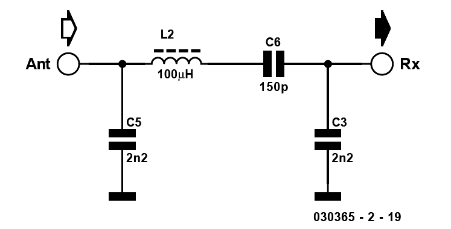
Radio Builder's Book
Figure 9.7 A varicap is used for tuning.
A fixed-frequency tuned circuit at the receiver front end may also be a useful solution in
some situations. In the medium-wave band for example, there may be only one usable re-
ception frequency. Even with a relatively large relative bandwidth of the input circuit, good selection is achieved due to the low frequency. The circuit in Figure 9.8 therefore employs a fixed inductor. The fixed-frequency band pass filter used here was designed for 1296 kHz.
Figure 9.8: An antenna filter for 1296 kHz.
9.4 Tuned Magnetic Field Antennas
A long wire antenna receives electrical energy from both the electric and magnetic field
components of the RF field but smaller antennas such as whip antenna are only sensitive to
the electric field component, which results in higher noise in the received signal, especially in domestic environments. Electrical appliances and power line noise couple capacitively
to the receiving antenna, so in this environment it would be advantageous to pick up the
magnetic field component instead. In principle, a wire loop or coil is sufficient for this purpose. A commonly used antenna design for this purpose is a frame antenna onto which a
few turns of wire or simple loops (aka magnetic loops) are wound. Tuned loops with high Q
are highly effective. For example, a length of copper pipe bent into a one-meter diameter
loop can be used, or a wide length of aluminum foil wrapped around a correspondingly
large cardboard box also produces good results. Tuning the loop with a variable capacitor
up to 500 pF produces a resonant circuit with an extremely high Q, resulting in significantly more voltage at the antenna than might be expected for an aerial of this size. The receiver
is loosely coupled using a small coupling coil to avoid excessively damping the loop. The
optimal size and location of the coupling coil is best determined experimentally. Thanks to
the high Q of the antenna, an additional preselector is unnecessary in this design.
● 148
Radio Builders Book - UK.indd 148
29-06-2023 16:09
Chapter 9 • Shortwave Antenna Design
Figure 9.9: A Magnetic Loop Antenna.
A magnetic loop antenna can also be built using simple wire, although this results in lower
Q factor together with lower antenna voltage and a wider bandwidth. If the antenna needs
to be physically smaller, two or more turns of insulated wire can be used.
In the simplest case, a shielded loop can be built using a length of coaxial cable. This an-
tenna can be discreetly placed on a bookshelf and provides a relatively good signal-to-noise ratio. The resonance frequency is determined by the size of the loop and the value of the
tuning capacitance. With a total of four meters of coaxial cable and a 500 pF tuning capaci-
tor, resonant frequencies below 6 MHz can be achieved. The broadband transformer should
have a higher value of inductance on the primary inner-wire loop side than on the second-
ary outer-shield loop side. Good results can be achieved with about 20 turns on a ferrite or toroidal core. The tuned circuit should not be overly damped for high quality. Therefore, the secondary side of the transformer should only have two to four turns, the best coupling coil match should be determined experimentally.
● 149
Radio Builders Book - UK.indd 149
29-06-2023 16:09
Radio Builder's Book
Figure 9.10: A Tunable Shielded Loop Antenna.
9.5 An Active Indoor Antenna
Sometimes there is simply no opportunity to rig up an outdoor antenna. A solution to this
situation could be a small table-top antenna with a two-stage preamp. The antenna de-
scribed here consists of a shielded magnetic loop with an additional telescopic antenna. The loop is about 30 cm diameter and the telescopic antenna extends to about 75 cm. While the
shielded loop antenna is very insensitive to electrical near-field interference, the antenna provides a increased electric field signal as required.
The loop antenna has a clear directional characteristic with two maxima in the longitudinal
plane. By rotating the antenna you can search for a maximum of the wanted signal or op-
tionally suppress an interfering signal. The telescopic antenna has a circular radiation pattern without any directional effect on its own. However, when operated together with the
loop, both signals add together. Due to the phase shift between the electric (E) and mag-
netic field (H), their sum produces a single maximum. To produce a distinct minimum for
unwanted signals, the telescopic antenna needs to be adjusted experimentally to balance
both signals. The best directional effect is achieved with a telescopic length of about 40 cm
● 150
Radio Builders Book - UK.indd 150
29-06-2023 16:09
Chapter 9 • Shortwave Antenna Design
Figure 9.11: A tabletop antenna with preamplifier.
The antenna itself only delivers very small signal levels compared to a long wire antenna.
The two-stage preamplifier compensates for this signal loss almost completely. The limit
to the maximum preamplifier gain setting is when you begin to hear the noise generated
by the first transistor in the preamp stage. However, this is not yet the case, especially in the shortwave band, i.e., atmospheric noise prevails despite the small antenna. A second
limit of amplification arises due to the possible occurrence of intermodulation from strong
signals. With three stages, strong overloading of the final transistor and clear intermodu-
lation products can occur. You can recognize this condition when there are practically no
free frequencies available and the background noise increases sharply. A two-stage preamp
however works quite well with this size of antenna.
Both stages use feedback to adjust the operating point and reduce distortion. The input
stage is designed with high impedance, while the output stage is optimized for high output
with a collector resistor of 150 ohms.
The suggested BFR96T transistors were specially developed for UHF preamplifiers. How-
ever, in this application in the shortwave band, there is really no need to use such a high
frequency component; you could substitute another high frequency transistor such as a
BF494. Experiments using a low-noise low-frequency transistor such as a BC548 also pro-
duced good results, although a drop off in the RF gain was apparent above 10 MHz. The
antenna also works quite well in the medium-wave band when general purpose transistors
are fitted.
● 151
Radio Builders Book - UK.indd 151
29-06-2023 16:09
Radio Builder's Book
Figure 9.12: Active Antenna construction.
The loop antenna has an extremely low radiation resistance and poor matching to the first
amplifier stage, which results in only small signal voltages and a low signal-to-noise ratio, especially for reception on longwave and the VLF band below 150 kHz. By using an RF
transformer you can improve matching. A ferrite core transformer with an AL value of over
1000 nH/n² is suitable for this application and should have 4 turns on the primary and 40
turns on the secondary. This increases sensitivity by about 20 dB, allowing reception of the entire band from about 50 kHz up to the medium wave band. Using only the magnetic loop
antenna (without the rod antenna) provides good directional characteristics and excellent
shielding against electric fields from nearby electrical devices. The active antenna achieves much better reception performance than a long wire antenna. Signals from the DCF77 time
signal transmitter at 77.5 kHz and numerous other stations operating below 100 kHz can
be received clearly.
● 152
Radio Builders Book - UK.indd 152
29-06-2023 16:09
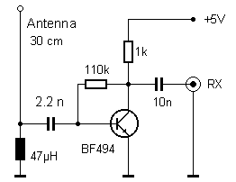
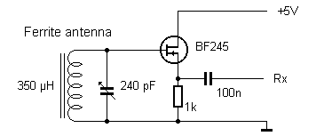
Chapter 9 • Shortwave Antenna Design
Figure 9.13: Adaptation for the longwave band.
9.6 Antenna Preamplifier
Typically, an SDR receiver is designed for long antennas and will not overload even with the higher signal levels of a long wire antenna. However, it’s worth testing to see if a short whip antenna will do the job also. For this purpose, a small preamplifier is required. The following circuit works across the entire shortwave range. The antenna used here is only 30 cm long
and consists of 0.5 mm diameter single strand wire. The recovered signal levels were com-
parable to those of the long wire antenna but interference from domestic appliances was
more apparent so that the noise floor was worse, resulting in more dropouts.
Figure 9.14: Preamplifier for short antennas.
In the medium-wave range, a ferrite rod antenna works well as they are relatively insensi-
tive to electrical interference, similar to magnetic loops. Figure 9.15 shows a ferrite anten-na with an impedance converter. The resonant circuit generates relatively high resonance
signals, even from distant transmitters.
Figure 9.15: Active Ferrite antenna.
● 153
Radio Builders Book - UK.indd 153
29-06-2023 16:09
Radio Builder's Book
Chapter 10 • VHF Radios
Listening to distant shortwave broadcasts can be exciting and a real challenge, but most
people who simply want to listen to music or current affairs end up using an FM radio on
the more common VHF frequency band. This type of radio that sits on the kitchen worktop
is fairly ubiquitous. It’s easy to forget that you could fairly easily build one of them from scratch. In this article, we will look at some tried and tested designs that will help you make your own FM radio.
10.1 A Superregenerative Receiver
The simplest FM radio receiver circuit is the superregenerative (superregen) receiver. You
can build such a receiver with just two transistors.
Figure 10.1: A 2 transistor superregenerative receiver.
To ensure stable operation, a large ground plane is necessary for this design. To build this experimental setup in the lab I used a cut-out tin lid of a coffee can. These sorts of cans
are often used to package dry edible goods; they normally have a cardboard tube crimped
onto a thin circular tin-plate base. For our purposes the cardboard can be cut away with a
sharp knife. The lid here is slightly domed and provides a stable base which takes solder
very well. A piece of perforated or strip board is used as a wiring field.
The tuning coil can be made of copper wire or, better still, silver-plated copper wire with a gauge of 0.8 mm winding 5 turns on an 8 mm diameter former. Keep the interconnections
short, especially to the tuning capacitor. The tuning capacitor used here is a trimmer ca-
pacitor mounted directly on the ground plane. The second coil in the circuit has 20 turns of 0.2 mm CuL wound directly on the body of a quarter-watt, 10 kΩ resistor.
● 154
Radio Builders Book - UK.indd 154
29-06-2023 16:09
Chapter 10 • VHF Radios
Figure 10.2: Circuit build using a tinplated earth plane.
The antenna should not be too long to avoid interfering with other radio listeners via the
regeneration process. The circuit is very sensitive and works with a 10 cm long antenna
made simply from a piece of wire. The headphone should ideally be a 400 Ω high-imped-
ance type. A 32 Ω stereo headphone will also work but may be relatively quiet.
At turn on the receiver initially makes a loud noise. You can use a screwdriver on the coil
slug to adjust the frequency and when you find an FM station, the noise becomes quieter or
completely silent. To hear the FM signal clearly, you need to tune in precisely. This requires some practice and skill but once you’ve found your favorite station on FM, you don’t need
to touch the dial again.
The sound quality of this simple receiver is admittedly rather poor. But at least it works
with just two transistors. In the early days of FM radio, the superregen design was widely
used. Back then, the circuit was built using vacuum tubes. This design, however, eventually
fell into disrepute because it simultaneously receives and transmits and can interfere with
your neighbors listening pleasure. This also applies to the version of this receiver built here.
It is doubtful that you would get the CE stamp of conformity for such a radio. The whole
thing is more of an interesting experiment rather than a suggested replacement for the
proven superhet. On the other hand, you often find the superregen principle still used in
receivers working in simple remote control receivers, radio-controlled sockets, and wireless thermometers.
● 155
Radio Builders Book - UK.indd 155
29-06-2023 16:09
Radio Builder's Book
Figure 10.3: Battery operation.
The quench oscillator is just a normal oscillator. Every time the oscillator output releases the tuned VHF circuit, oscillations start building up beginning from almost zero. Thermal
noise in the front end helps initiate the tuned circuit oscillation. This stimulation effect sometimes works faster and sometimes more slowly. The individual build-up process therefore takes different lengths of time, which leads to an increase in collector current noise
overall. This noise is audible in a superregen receiver when it is not tuned to any station.
The waveform shown in Figure 10.4 triggers on the first left-most edge; noise on the
waveform can be seen as increasing fuzzyness as the trace moves across to the right side
of the screen.
Bild 10.4: Quench waveform with noise.
When a received signal is present at the set frequency, this helps to initiate the next envelope of RF oscillations. So it starts a little faster every time. The quenching frequency will therefore increase when receiving a signal. An unmodulated receive signal will produce a
stable quenching oscillation with no noise at the output. An amplitude modulated signal will provide differing levels of oscillator start up assistance, which will be reflected in the average value of the change in collector current. An FM signal can be demodulated by tuning
● 156
Radio Builders Book - UK.indd 156
29-06-2023 16:09
Chapter 10 • VHF Radios
to the edge of the oscillator signal to produce an amplitude modulated signal so that both
types of modulation can be accommodated. The resulting waveforms can be viewed on an
oscilloscope. A Sawtooth waveform at the emitter resistor indicates when a station is being
received. The sensitivity of this receiver is so good it can actually work without an antenna!
The RF resonant circuit on its own absorbs enough energy for operation.
10.2 Vacuum Tube Super Regen Receiver
The Franzis tube radio (Section 3.9) is a shortwave regenerative receiver. Such circuits
will burst into oscillation (motor boating) if the feedback control is turned up too far at
higher frequencies. An experiment was carried out to find out whether the radio could be
converted into a VHF superregen receiver, thereby removing the need for manual feedback
tweaking.
Figure 10.5: VHF superregen with a 6J1.
In the first test, I removed the shortwave coil and replaced it with a smaller three turn
coil more suitable for use in the VHF band. Connections to the tuning capacitor are also
changed, so that the 20 pF range is now used. Instead of the feedback adjustment potenti-
ometer I connected a 0 to 60 V power supply. The 100 kΩ grid resistor no longer connects
to the anode, because that would cause negative feedback and dampen oscillations. Now it
connects to +6 V at the heater. Some regeneration oscillations could already be observed,
but at too low a frequency.
● 157
Radio Builders Book - UK.indd 157
29-06-2023 16:09
Radio Builder's Book
Figure 10.6: The 3-turn VHF coil.
The long tracks on the circuit board were causing a problem. I wound an improved coil us-
ing thicker wire made up of three turns using the shank of an 8 mm drill bit as a former and soldered the coil very close to the tuning capacitor. The tap point to the cathode is made
with a short wire, and the grid is connected to the 100 pF capacitor using short leads. The
tracks at the grid and cathode are also cut. Now with all these changes made I was then
able to tune the radio across the entire FM band.
When measuring with the oscilloscope, I saw strong evidence of the quenching oscillation
signal at the collector of the AF preamp. For this reason I soldered a 100 nF capacitor
between the collector and emitter of transistor T2 (see Figure 10.5). For the preliminary
testing I just soldered a 470 kΩ resistor between P4 and P5 instead of the volume pot. With
these changes, the FM radio worked. I need to supply the anode voltage between 30 and
40 V from a lab power supply. The circuit will not function on 15 V alone like the shortwave version of the radio does.
10.3 VHF Receiver using the TDA7088
This FM radio from Franzis can receive stations in the range of 87.5 MHz to 108 MHz and
provides good reception quality. Thanks to the TDA7088 integrated receiver module, you
can listen to strong local stations with good sound quality. The receiver’s sensitivity is also good enough to pull in distant stations.
● 158
Radio Builders Book - UK.indd 158
29-06-2023 16:09
Chapter 10 • VHF Radios
Figure 10.7: The VHF FM retro radio.
The design of this radio set is reminiscent of portable radios from the 1960s. Back in those days semiconductor devices were replacing vacuum tubes in more and more applications.
Transistors consumed less energy and allowed devices like radio sets to be made smaller,
battery powered and portable. Apart from that, the principles of a radio receiver design
were very similar to that of older tube radios.
Figure 10.8: The TDA7088 uses a pot for tuning.
● 159
Radio Builders Book - UK.indd 159
29-06-2023 16:09
Radio Builder's Book
Thanks to the highly integrated nature of the TDA7088 receiver IC, building your own FM
radio is now very easy. The single-ended audio amplifier function is more similar to the historical predecessor of a tube radio. The vintage radio uses a two-stage transistor amplifier and gives a moderate output volume powered from two AA cells which will last for up to
200 hours.
Figure 10.9: The kit components.
Most FM superheterodyne receivers use an intermediate frequency of 10.7 MHz. The re-
ceived frequency is first converted to the intermediate frequency and then filtered, ampli-
fied, and demodulated. This FM radio is also a superhet that converts its received signal to an intermediate frequency. However, the intermediate frequency is much lower at about
70 kHz. This means that the IF filters do not require matched coils. The FM demodulator is
simplified and much more immune to distortion. All the essential stages are included in a
single SMD IC, the 16-pin TDA7088. Instead of an air-vaned tuning capacitor like you see
in older radio receivers, this radio uses a varactor or varicap diode D1. As the DC voltage
across the diode increases its depletion zone becomes wider and its capacitance value de-
creases. This translates into a higher receive frequency. The only adjustment point is the
coil SP1, which sets the oscillator frequency lower limit.
● 160
Radio Builders Book - UK.indd 160
29-06-2023 16:09
Chapter 10 • VHF Radios
Figure 10.10: The fully populated PCB.
The circuit board is designed in such a way that all components around the TDA7088 re-
ceiver chip have SMD outline. This makes the construction easier. In this radio, the two coils need to be wound by hand using the wire provided and then during setup the coil turns can
be stretched out or pressed together slightly to perform fine-tuning.
Figure 10.11: All the parts mounted in the case.
The audio power amplifier is a simple Class-A amplifier with the two transistors T1 and T2.
The idle current is about 20 mA. The circuit still works with good sound quality when the
supply voltage falls to 2.2 V.
Some of the wired components can be exchanged to change certain properties of the radio.
R1 determines the tunable frequency range. A lower resistance will increase the tuning
range. This is useful, for example, if you plan to operate the radio with NiMH batteries
at 2.4 V. R2 determines the width of the AFC capture range. If you want to receive weak
stations in the vicinity of stronger stations, it may be useful to increase R2 up to 1 MΩ to reduce the capture range.
● 161
Radio Builders Book - UK.indd 161
29-06-2023 16:09
Radio Builder's Book
The two connections RE1 and SC1 of the board are not used initially and are intended for
later expansion. The TDA7088 was originally developed for push-button tuning. The circuit
diagram shows the two push-button switches for reset and scan. If you want to modify the
receiver accordingly, the PT2_2 connection to the slider of the frequency controller should
be disconnected. At this point, you may wish to install a switch so that the receiver can be tuned either via pushbuttons or the potentiometer.
10.4 Stereo Signal Decoding
The TDA7040 stereo decoder chip is perfect for converting the Franzis FM radio to stereo
output. To achieve the necessary bandwidth at the receiver output, the 680 pF SMD capac-
itor C10 must be removed from the circuit. You just need to unsolder one side of C10, that
way it won’t get lost, you never know, you may need it again.
Figure 10.12: External components for the TDA7040.
Figure 10.13 shows my first attempt at hooking up the TDA7040 decoder to the output of
the TDA7088. A set of high-impedance stereo headphones with (2 × 300 ohms) without
any filter capacitors are shown at the left and right output pins. This is not ideal, but it is enough for initial testing.
● 162
Radio Builders Book - UK.indd 162
29-06-2023 16:09
Chapter 10 • VHF Radios
Figure 10.13: Operation into stereo headphones.
Using the potentiometer, the oscillator frequency is adjusted to the appropriate level. On
the oscilloscope, you can see how the correct 38 kHz subcarrier signal is detected when a
stereo signal is present. The capture range is so wide you can just replace the pot with a
fixed resistor. At its mid-point the pot measures 50 kΩ if you add that value to the 100 kΩ
fixed resistor it gives a value of 150 kΩ. The scope waveform also shows that the decoder
is still being overloaded, so the signal here will need to be attenuated. The result is, however, quite impressive: a clear stereo audio signal can be heard from the headphones. It’s
relatively quiet, but the circuit functions correctly.
To drive speakers at a reasonable volume a small amplifier type TDA7050 is very easy to
install and also operates from 3 V. No additional capacitors are required. A 27 kΩ resistor
has now been placed between the radio IC output and the stereo decoder to prevent the
overloading mentioned above. A twin-gang stereo potentiometer directs the L and R signals
to the final amplifier. All of this can be fitted onto a small square of perfboard.
Figure 10.14: Adding an output amplifier.
● 163
Radio Builders Book - UK.indd 163
29-06-2023 16:09

Radio Builder's Book
Figure 10.15: VHF radio with loudspeaker and stereo headphone output.
The radio now has two volume knobs, one for the mono speaker, which has now been
swapped for a higher (32 Ω) impedance coil to give better volume, and one for the stereo
amplifier which outputs to the stereo jack socket. A set of headphones can be plugged in
here or alternatively there is enough power to drive two 32 Ω speakers. There is now one
volume knob for the mono speaker and one for the stereo headphones. This adds flexibility
to the way you listen to programs.
Figure 10.16: Decoder and stereo amplifier.
● 164
Radio Builders Book - UK.indd 164
29-06-2023 16:09
Chapter 10 • VHF Radios
If you think building the circuit on a perfboard is too risky, there are other options available.
Both ICs can be placed on a shared SMD adapter board. Only a few additional components
need to be added to the board. Coupling and filtering capacitors will be installed as part
of the wiring. As mentioned above the 100 kΩ trimmer pot connected to pin 3 on the TDA
7040 is unnecessary and was replaced with a fixed 160 kΩ resistor to ground.
10.5 A Plug-in VHF Module
The Franzis-supplied kit "Build your own FM radio" uses a pre-assembled PCB which contains the TDA7088 FM receiver chip together the necessary coils printed on the PCB. A
6-way pinheader strip provides connections for the board to the supply, tuning voltage,
antenna, and AF output.
Figure 10.17: The plug-in PCB fitted with the TDA7088/CD9088.
A 3 V voltage regulator ensures more stability when tuning. An integrated speaker amplifier
provides a good level of volume.
Figure 10.18: VHF radio with voltage regulator and output amplifier.
● 165
Radio Builders Book - UK.indd 165
29-06-2023 16:09

Radio Builder's Book
The PCB is fitted with a 6-way pinheader strip and all the other components have flying
leads attached with ends that plug into a prototyping plug board so you won’t need a sol-
dering iron to assemble this kit. This TDA7088 receiver PCB is also suitable for building
simple FM radios to incorporate in your own projects.
Figure 10.19: The complete VHF receiver fits neatly into an enclosure.
10.6 'Tube Sound’ VHF Radio
The Franzis Retro Radio Deluxe combines a TDA7088 FM receiver with a tube audio ampli-
fier stage and an integrated LM386 power amplifier.
Figure 10.20: Schematic of the VHF receiver with tube audio stage.
● 166
Radio Builders Book - UK.indd 166
29-06-2023 16:09
Chapter 10 • VHF Radios
The PCB contains many SMD components already mounted on the board, including the
TDA7088 receiver IC, 15 capacitors, and one resistor. The components with connecting
wires, such as all the parts of the audio amplifier, the tube socket, and the coils and components around the radio’s diode tuning are the only items that need to be soldered.
Figure 10.21: The compact PCB contains the VHF receiver and tube socket.
Figure 10.22: Installation in the case.
This radio has a special feature called the 'sound switch’. When you turn it on, it activates the tube and gives the radio a fuller sound. If you just want to casually listen to the news, you can turn off this tube and save power. The sound switch interrupts the tube’s heating
circuit. When the heater is off, anode current flow will stop. Part of the audio signal is then directed past the tube to the final amplifier. With an active tube, you get more volume and
the distinctive changes in sound due to the nonlinearity of the tube’s characteristic curve.
The radio is designed so that you can see a red glow from the cathode from the front of
the set.
● 167
Radio Builders Book - UK.indd 167
29-06-2023 16:09
Radio Builder's Book
Figure 10.23: Front view showing the tube port top left.
10.7 The SI4735 DSP Radio
The SI4735 is a chip measuring 3mm × 3mm that contains a complete radio able to tune
to one FM and three AM bands. The company Modul-Bus has developed an adapter PCB on
which the chip is mounted. This board can be conveniently used together with a prototyping
plug board for carrying out tests to build a radio. In addition, for experimentation a USB/
serial converter board type UM232R is used to provide the interface between a PC and the
receiver chip via USB. The chip also provides the required 3.3 V operating voltage with its
in-built LDO regulator.
Figure 10.24: The SI4735 block diagram.
From the block diagram you can see that this radio chip functions as an IQ type receiver,
similar to the shortwave receiver design we described earlier (Section 8.6). The main dif-
ference here is that all the signal decoding does not need any external PC software because
● 168
Radio Builders Book - UK.indd 168
29-06-2023 16:09
Chapter 10 • VHF Radios
the SI4735 contains a digital signal processor (DSP) which takes care of these tasks. A
PC or microcontroller is, however, still required for tuning. The SI4735 has various digital interfaces for communication, and in this case, the I2C bus is used. This uses signals SDA
and SCL along with the chip’s reset input.
Figure 10.25: Connections to the outside world.
The circuit diagram shows a minimal setup for the initial test. Only a short piece of wire
was used as an FM antenna. The stereo outputs R and L do not have coupling capacitors
because they are already included in the internal amplifier input. A 32 kHz crystal provides the clock signal. The interface to the UM232R requires three resistors. Two of the lines could be connected directly, but this provides greater fault tolerance.
The chip requires a supply voltage of 3.3 V at VDD and VIO. Note that no more than 3.6 V
is allowed at VDD. It is important to make sure that the UM232R interface adapter is not ac-
cidentally jumpered to 5 V. Unfortunately one chip was damaged during the initial trials due to my own carelessness. Jumper S1 must be in the upper position to provide 3.3 V to VIO.
● 169
Radio Builders Book - UK.indd 169
29-06-2023 16:09
Radio Builder's Book
Figure 10.26: The clock crystal, RS232 interface and SI4735 on a breadboard.
In this project, the FT232R chip is used as a serial interface, like COM1 or COM2. The TTL
levels with 3.3 V are inverted compared to a real RS232. The DTR and RTS lines form an I2C
bus with the additional input line CTS. To control it, a small test program has been written in VB, which can be downloaded from elexs.de.
Figure 10.27: The control interface.
You will need a length of wire about 10 cm long to use as a simple antenna to receive FM
broadcasts. After starting the program initialize the receiver by clicking on the FM button.
The 32 kHz crystal will now start oscillating. Another test for successful initialization is the voltage level at the R and L audio outputs, which should now rise to about 1 V. The FM
radio tunes to the first strong station and the stereo signal appears at the output. You can enter another frequency in the frequency field or start a scan. At the top right there is also a volume control slider.
For AM reception, you will need to connect an appropriate antenna or preselector, such as
a ferrite antenna. After AM initialization, tuning works similarly to FM, either by direct input or by using the scan function.
The SI4735 module has been used in various projects, including the PC radio and home
radio from Modul-Bus, as well as the Elektor DSP radio with a microcontroller and LCD.
● 170
Radio Builders Book - UK.indd 170
29-06-2023 16:09
Chapter 10 • VHF Radios
10.8 PC Radio from a USB Port
The PC radio allows for control of all functions of the SI4735 via the USB interface. The
perforated grid area provides enough space for additional circuitry.
Figure 10.28: The PC Radio.
Figure 10.29: Schematic with USB port.
Software to interface with and control the radio is available from elexs.de. The standard
program is called Si4735Radio5.exe. It was written in Delphi and includes handling of the
chip’s RDS function.
● 171
Radio Builders Book - UK.indd 171
29-06-2023 16:09
Radio Builder's Book
Figure 10.30: The SI4735 radio with RDS information.
10.9 The VHF FM Home Radio
This FM radio has been designed to make it easy and intuitive to use especially for those
who are less confident with tasks that require a good level of manual dexterity. Firstly any station in the complete FM band can be tuned using the tuning potentiometer so that the
stations are distributed around a rotation angle of 270 degrees. The user would typically
only listen to just a few of these stations. Say for example three stations are programmed
during setup. Now the tuning knob will now select between only these three stations so that
the first 90 degrees of rotation selects station 1 and the next 90 degrees selects station 2, etc. This makes tuning a doddle, no more squinting at a tuning dial or fiddling with band selection. This level of convenience is made possible by a small microcontroller type ATtiny25.
● 172
Radio Builders Book - UK.indd 172
29-06-2023 16:09
Chapter 10 • VHF Radios
Figure 10.31: Operation with a microcontroller.
The small standalone board also includes a simple mono speaker amplifier. If you want
to use it, both jumpers must be in position. You can install the board, for example, into
an existing speaker cabinet and make a custom radio. It is often useful not to mount the
potentiometers on the board but to install some with long spindles elsewhere in case. The
stereo jack output can also be used to connect the radio to PC active speakers, for exam-
ple. The provided housing offers space for a 9 V battery or power can be supplied via the
power supply jack.
● 173
Radio Builders Book - UK.indd 173
29-06-2023 16:09

Radio Builder's Book
Figure 10.32: The VHF FM home radio with all controls and mounted components.
Figure 10.33: The radio fitted into a case.
There are two ways to program the radio: using the pushbutton on the board or via a con-
nected PC.
Programming using the pushbutton: When turning on the radio, the pushbutton must be
held down for more than a second to enter programming mode. The radio then immediately
searches from 87.5 MHz for the first station. Now with each press of the button, the radio
scans to the next station. To save a station, the button must be held down for more than a
second. A short press of the button skips the last station heard and searches for the next
● 174
Radio Builders Book - UK.indd 174
29-06-2023 16:09
one. Up to 20 stations can be saved, which are then distributed over the entire 270 degrees
rotation of the tuning dial during normal operation. After programming, the radio should be
turned off and then back on again.
To program via a PC, a serial cable can be connected to GND and COM (TXD pin). For op-
eration, any terminal program working in text input mode is sufficient. The transfer rate is 1200 baud. The radio can be switched to PC mode at any time during normal operation and
can then only be controlled by the PC until the next restart. Using the terminal, you can
tune the receiver and assign frequencies between 65 MHz and 108 MHz to the individual
memory locations. If, for example, ten stations were previously stored and now only four
stations are required, a special end marker must be written to location 5.
Enter: Start the PC mode
8880: Tune to 88.8 MHz
10280: Tune to 102.8 MHz
1:
Set to memory location 1
20000: Use as end marker for frequencies > 108 MHz
5:
Use end marker in memory location 5
After finishing the programming process, the radio needs to be restarted for the settings
to take effect. Alternatively, the receiver can just be used as a PC radio by default. It is also possible to create custom applications with special firmware, such as a kitchen radio
for parents with children. A station chosen by one of the children will automatically switch back to the station preferred by a parent after 30 minutes. Or a sleep radio, which turns off automatically after a predetermined time. Those who wish can modify the firmware to do
exactly as they please. The possibilities are endless.
In Figure 10.34, an alternative installation suggestion is shown using a retro radio case.
The potentiometers on the board have been replaced with ones mounted on the case. The
meter monitors the battery voltage. The built-in speaker and the large housing provide a
full sound.
● 175
Radio Builders Book - UK.indd 175
29-06-2023 16:09

Radio Builder's Book
Figure 10.34: Using an existing enclosure.
Figure 10.35: All the wiring inside using the existing pots.
● 176
Radio Builders Book - UK.indd 176
29-06-2023 16:09
Another possibility would be to use a different custom enclosure. How about a vintage tube
radio, for example? There must be loads of these hanging around in junk shops that most
people don’t have the time or inclination to bring back to life. If you are planning a retro vibe for your home decoration and think a particular vintage set would be the cherry on the
cake why not bring the radio back to life by installing a home radio? It doesn’t have to be
final, but you could simply use the original speaker and just retire the vacuum tube chassis.
The result would most likely be a particularly beautiful sound, almost like in the old days, but without the crackles and distortion that dogged radio reception in the early days. One
thing is clear; for sound quality, none of these old radios would be able to compete with
modern FM broadcasts.
It may also be possible to actually use the output tube EL84 and volume control of the
original set, but first you would need to remove all the RF tubes from their sockets. Then,
all that’s missing is where to position the tuning potentiometer for the home radio. One
solution might be a mechanical coupling with the tuning capacitor. It may be less hassle
if one of the tone controls were repurposed. Whatever, you would certainly end up with
something quite unique!
10.10 The Elektor DSP Radio
A world receiver which works on all the FM, LW, MW, and SW bands, but doesn’t have any of
the traditional tuning circuitry or controls can be built using Digital Signal Processing (DSP) principles. In the design shown here all the essential functional groups are housed in the
tiny 3 mm × 3 mm Si4735 DSP radio chip. In addition to this the radio has a control unit
with an LCD, a stereo audio amplifier, and the necessary interfaces to allow the receiver to be controlled by a PC, if desired.
Many radio enthusiasts actually find they need two receivers, one for portable use and one
as a stationary receiver with PC control. The Elektor DSP radio shown here can do both.
Thanks to the USB interface, PC control is possible at any time, and the entire receiver can be powered via USB. The audio output can also be connected to PC active speakers. The
receiver can also be powered from a 6 V battery pack and the circuit has its own integrated
audio amplifiers and one (or two) speakers.
● 177
Radio Builders Book - UK.indd 177
29-06-2023 16:09
Radio Builder's Book
Figure 10.36: Stuffed prototype of the Elektor DSP Radio.
When it comes to a universal receiver, the first thing I look for is a clean FM reception,
preferably in stereo and with RDS station display, so I can see what I am listening to. This receiver offers these features with excellent FM sensitivity and sound quality. It uses the
SI4735 chip so RDS is also included.
The second requirement is that the radio’s shortwave performance should have the abil-
ity to pick up distant AM stations. Here, too, the receiver excels with excellent shortwave
reception characteristics, with very high sensitivity combined with good large signal toler-
ance, allowing the use of long antennas. An effective Automatic Level Control (ALC) brings
the received signal into the optimal range, so that low gain antennas can be used without
much loss in performance. This receiver’s selectivity is also outstanding, and you can freely choose the bandwidth in several stages, which is usually only available with top-end receivers.
This receiver also covers the medium and long wave bands. An antenna input allows for the
connection of an external antenna for any frequency bands. If a simple whip antenna or
some other indoor aerial is fitted it will usually pick up too much domestic interference so you can alternatively connect to a ferrite antenna here.
● 178
Radio Builders Book - UK.indd 178
29-06-2023 16:09
Chapter 10 • VHF Radios
Figure 10.37: The receiver schematic.
● 179
Radio Builders Book - UK.indd 179
29-06-2023 16:09
At first glance, the receiver’s circuit doesn’t show much evidence of typical RF technolo-
gy or VHF receiver design. That’s because all essential functions are integrated into the
Si4735. Only the antenna input circuitry reveals the RF nature of this design. The antenna
signal from the BNC socket K4 or screw terminal K3 first passes through a diode limiter with D4 and D5. L2 is the FM coil with a value of 0.1 µH. The jumper JP1 is normally in position
3-2, connecting the bottom end of the FM coil to the AM input.
What you can’t see in the circuit diagram is that in FM mode, the receiver sets its internal AM 'variable capacitor’ to 500 pF, which effectively shorts the FM coil to ground. In AM
mode, however, the antenna signal now passes through L2 as an extension coil to the AM
resonant circuit made up of L3, L4, L5 and the automatically tuned 'variable capacitor’
inside the Si4735 at pin 4 (AMI). The diode switch with D6 and D7 determines which fixed
inductances are effective. If necessary, a portion of the coils are be shorted to ground via the 1N4148 diodes. In normal operation, the three jumpers JP2 to JP4 are closed, but alternative input circuits or a ferrite antenna can be connected via the jumper pins. For example, a medium wave ferrite antenna can be connected to JP3, and a shortwave loop to JP2. If a
whip antenna is only used for FM, JP1 is set to short pins 1-2.
The stereo output signal of the Si4735 is led to a stereo jack socket as an audio output via C28 and C29, for connection to an external amplifier or powered speakers. The output is
short-circuit-proof with an output impedance of 10 k at 80 mVeff approx. Two LM386 ICs
are used as audio power amplifiers, allowing speakers to be connected at K5. The maxi-
mum power into 8 Ω is about 300 mW. A stereo volume potentiometer is not required in
the circuit. The microcontroller IC3 (ATmega168) controls the volume of both channels and
all other functions of the Si4735 via software using the I2C bus with its two control signals SDA and SCL. It reads the voltage at the linear potentiometer P1 via the analog input ADC0
and converts it into corresponding commands for the Si4735. Tuning control is implement-
ed via a rotary encoder (ENC1) which connects to two input pins. The four pushbuttons S2
to S5 are additional controls. To show received signal strength a PWM output for connecting
an optional S-meter, generates a 500 Hz square wave signal with variable duty cycle and
a median voltage between 0 and 3.3 V. Almost any measuring device up to about 1 mA
can be connected to it with a suitable resistor. The ATmega168 microcontroller is clocked
at 8 MHz, which is independent of the receiver’s actual frequency. The receiver derives its
reception frequency from a connected clock crystal which runs at 32.768 kHz.
There are three options for powering the radio: through the USB port, a 6 V mains adapter
or a battery pack with four cells (4.8 to 6 V). This voltage VIN is applied to the two LM386
amplifiers, the LCD backlight, and the input of the voltage regulator IC1 (LP2950-3.3),
which regulates it down to 3.3 V for the radio chip, microcontroller, and LCD. The power
switch S1 on the board only switches the voltage from K1 (battery or power supply), while
the voltage from the USB port remains on. If you want to save power, you can turn off the
LCD backlight by removing the link at JP5. The LCD is still readable without the backlight.
The receiver consumes around 50 mA and works down to a voltage of 4.0V so you can
expect good battery life.
● 180
Radio Builders Book - UK.indd 180
29-06-2023 16:09
Chapter 10 • VHF Radios
Figure 10.38: The LC-Display in operation.
The display shows the tuning frequency, the antenna voltage in dBµV, and the signal-to-
noise ratio (SNR in dB). In FM mode, the lower line displays the station identifier and time sent via RDS
10.11 The BK1079/1068 FM Radio Chip
A new type of radio chip designed for use in small scanning headphone radios was intro-
duced only a few years ago. The BK1068 from the Chinese company Beken bears a strong
resemblance to the BK1079 from the same company; it comes in a slightly larger housing
with the unusual 1 mm pin spacing.
Figure 10.39: A small 8-way carrier PCB with the mounted BK1068.
Figure 10.40: Block diagram of the BK1079.
● 181
Radio Builders Book - UK.indd 181
29-06-2023 16:09
Radio Builder's Book
This IC seems to strongly resemble the DSP radios chips from Silicon Labs like the SI4735,
indicating that the BK1079/1068 is actually a DSP radio. This explains its high quality, as
the output signal is absolutely clean and shows no traces of the stereo subcarrier signal.
Another advantage over the TDA7088 is that the volume can be adjusted internally.
The Seek input and the Volume input have about half the operating voltage in their idle
state. The chip detects when the inputs are pulled to GND or VDD potential. Additionally,
there is a Reset function that sets the lowest frequency and a Power-Down input (PDN)
which turns the chip on and off. This allows the radio to operate without a switch to the
battery. When the radio is turned off, it consumes hardly any power and retains the last
used settings.
An adapter board for this IC is available from Modul-Bus. This brings the small SMD IC to
a handy DIP8 format. The ten connections are reduced to eight pins because GND appears
twice (pin 5 and pin 7) and the unused RCLK input is connected to Vdd. This board makes
experimenting easy. All you need is a 3 V battery and a few control pushbuttons to build a
high-quality radio.
The circuit shows a typical application with pushbuttons for all the functions. The Scan and Vol button inputs are actually tristate with a middle level at half the operating voltage.
Therefore, switching the pin to either GND or Vdd assigns two functions to one input.
Figure 10.41: External component connections
This module requires minimal external components if some of the switch functions are
ignored. The IC starts with maximum volume. A single scan button is sufficient because it
automatically switches back to the beginning at the upper end of the band, allowing the
IC to scan in a loop. The on/off button switches the IC to the power-down mode and back
to the active mode, while keeping all current settings, such as frequency and volume. This
means that unlike older scanning radios, you don’t need to scan for your preferred station
every time. Another advantage is that you can begin scanning in either direction.
● 182
Radio Builders Book - UK.indd 182
29-06-2023 16:09
Index
In Figure 10.42, there is a setup using six pushbuttons on a test board. A 470 Ω resistor is placed between the two up/down pushbuttons to prevent a short circuit if both pushbuttons
are accidentally pressed simultaneously.
Figure 10.42: Test setup testing all of the switch possibilities.
The IC is actually intended to drive headphones with 16 Ω impedance but delivers more
than ample volume and excellent sound quality. Tests have also shown that an 8 Ω speaker
can also be used. An output voltage of up to about 1 Vpp was measured. This volume level
is sufficient for most domestic environments without an additional power amplifier. The
module is also ideal for sprucing up an old tube radio, either using its own power amplifier or feeding into the existing tube power amp.
● 183
Radio Builders Book - UK.indd 183
29-06-2023 16:09
Index
AD9835 94
CW
34, 134
Adafruit 138
CY27EE16 87
AGC
36, 111, 112
Air-core 18
D
ALC 178
damping
22, 148
Amidon 107
DCF77 152
Amplitude Modulation
6
DDS
9, 80, 94, 95
AM transmitter
83
dead zones
143
Anode rectification
29
Delphi 171
Antenna 7
Demodulation 13
Arduino 138
depletion zone
160
ATiny13 88
DG-MOSFET 102
ATtiny25
84, 172
diode-ring 116
ATtiny85 98
Diode Ring Mixer
107
Audion
5, 9, 26
DRM
116, 144
DSP 177
B
Dual-gate 102
B548C 107
bandwidth 21
E
Bandwidth 20
EAA91 24
BAR28 107
earth 155
baseband
100, 107, 140
EC92 27
BB112 147
ECC81 27
BB204 112
ECC82 27
BC548 151
ECC86 31
BF245 103
ECF12 32
BF494
107, 151
ECO 40
BFO 34
EEPROM 89
BFR96T 151
EF95
27, 28, 31, 37, 48
EF183 40
C
EL95
41, 42
capture range
161
Elektor
137, 141
cascode configuration
43
Elektor magazine
9
cat’s whisker
13
Elektor Magazine
10, 133
CFW455F 112
Clapp oscillator
81
F
CMOS 82
fading
26, 143
coaxial
144, 149
Fading 144
Colpitts oscillator
68
feedback 101
coupling coil
148
ferrite
14, 15, 18, 19
crystal
8, 9, 11
ferrite core
15, 19
crystal detector
11
ferrite rod
61
crystal earpiece
16
FET
78, 84
CSB470
112, 116
flip flops
125
● 184
Radio Builders Book - UK.indd 184
29-06-2023 16:09
Foxhole 9
near-field 150
FT232R 134
O
G
oscillator
9, 25
galena 13
oscilloscope 157
Ge 11
germanium 11
P
grid bias
27, 40, 44, 48
pentode 27
Grid rectification
29
Pierce circuit
81
Grid Rectification
30
PLL 80
ground 11
PNP transistor
65
ground plane
47
preselection 147
propagation. 143
H
pyrite 13
harmonic 131
harmonics 103
Q
Hartley oscillator
26
Q 21
heater
24, 27
Quality factor
21
quartz oscillator
80
I
ICS307-2
86, 87
R
image frequency
121
RDS
171, 178
inductance
18, 22, 23
regeneration 26
input multiplexer
136
Regeneration 27
intermediate frequency
100
regenerative 43
intermodulation products
151
rejection
127, 130
ionosphere 143
resonant circuit
59, 68, 79, 81
RTTY 70
L
LCFR 22
S
LDO 168
Sawtooth 157
Lead sulfide
13
Schottky diode
11, 17, 24
Lee De Forest
26
SDR#
122, 142
Litz
14, 15, 24
SDRadio 122
LM386
68, 69, 114
shield 140
longwire antenna
145
shielding 71
sky bounce
143
M
Skywave 143
magic eye
64
slug
40, 109
microcontroller 172
S meter.
114
MK484 61
solar activity
143
Morse telegraphy
70
sound card
42, 54
motor boating
157
SSB
69, 70, 134
Styroflex 81
N
superheterodyne 100
NE612 105
superregen 155
● 185
Radio Builders Book - UK.indd 185
29-06-2023 16:09
super regenerative
56
symmetric mixer
126
T
TA7642 61
TDA7040 162
TDA7088 160
temperature coefficient
80, 81
TL084 129
transmitter 93
trifilar winding
107
triode 26
tube diode
24
TUF-1
107, 118
U
UM232R
168, 169
V
varactor 160
varicap
147, 148
VFO 80
W
weatherfax 70
Weaver modulation
122
whip antenna
55
Z
zero-IF 114
ZL2PD 98
ZN414 61
● 186
Radio Builders Book - UK.indd 186
29-06-2023 16:09
books
books
Radio
Builder’s Book
From Detector to Software Defined Radio
Radio frequency (RF) technology is one of the areas which still allows
putting your own ideas into practice. Countless circuit variants with special
objectives allow space for meaningful experiments and projects. Many
things simply aren’t available off the shelf. Crystal detector radios without
Burkhard Kainka (1953)
their own power source, simple tube receivers with a touch of nostalgia,
— ham radio operator with the
the first reception attempts at Software Defined Radio, special receivers
callsign DK7JD, worked for many
for amateur radio, all this can be realized with little effort and as a perfect
years as a physics teacher. Since
introduction to RF electronics.
1996 he is an independent developer
and author in the fields of electronics
and microcontrollers. Burkhard runs
For a long time, radio construction was the first step into electronics.
the websites www.elektronik-labor.
Meanwhile, there are other ways, especially via computers, microcontrollers,
de and www.b-kainka.de, with his
and digital technology. However, the analog roots of electronics are often
contributions to the Hobby Corner
neglected. Elementary radio technology and easy-to-do experiments are
and a general fondness for the
basics of electronics.
particularly well suited as a learning field for electronics because you can
start with the simplest basics here.
But the connection to modern digital technology is also obvious, for
example, when it comes to modern tuning methods such as PLL and
DDS or modern DSP radios.
This book aims to give an overview and present a collection of simple RF
projects. I would like to support you to develop your own ideas, to design
your own receivers and to test them.
Elektor International Media BV
www.elektor.com